從這裡開始
選順序，安排自己的節奏。
從 Al Brooks 與方方土建立圖表語言，再跟著 Ali 的系統思考、Brad 的決策示範，把觀察變成能練習、能驗證的流程。
原創概念示意，非真實行情、交易訊號或回測績效。
本計畫以每週 6 小時、約 12 週為預設；完成時間依練習調整。目標是建立可驗證的流程，並非在固定期限內達到獲利。既有索引查核：2026.10.22；新教材與評價查核：2026.10.24。閱讀庫更新：2026.10.29。影音與 Podcast、參考書籍更新：2026.10.27。
按問題找專區，按順序學觀念。文章、圖解、原文與自己的紀錄，都有清楚入口。
16 / 16 個專區入口
選順序，安排自己的節奏。
先讀懂，再回查來源。
讓不同觀點回到相同證據。
按問題選教材，保留查核範圍。
把理解變成能重播的練習。
有明確問題時，再往下探索。
沒有符合的專區。試試較短的詞，或按「清除」查看全部入口。
要找文章名稱或內容主題？請到 閱讀教材搜尋。
沿用原有六階段，精選十八篇作為主線。你可以自由切換；先讀一篇，再留下本階段的練習成果。
閱讀庫載入後，會依你的已讀標記提示下一篇。
與原有四十八項練習任務分開計算。
進度會在閱讀庫載入後顯示；下方完整清單的文章連結可直接使用。
已讀是你的閱讀紀錄。它不代表已理解、完成練習或通過交易驗證。此順序由本站編排，並非任何講師的官方課綱。官方單元與來源範圍請在文章內查閱。
四種觀點各有資料需求。先選你想研究的問題，再回閱讀庫挑選完整路線。
先讀摘要，再理解條件與反例。把原創導讀、來源短摘要及授權譯文分開，讓每次閱讀都有可留下的練習。
累積 56 篇繁中原創導讀與 6 篇授權節譯，全部 62 篇附有整理圖，共 74 張原創 SVG。先沿入門順序建立背景、K 棒、風險與紀錄，再按問題選擇進階路線；來源摘要、本站算例與授權譯文分開標示。
從入門第一篇開始 →閱讀筆記儲存在此瀏覽器，可匯出備份。
從背景、K 棒、風險與紀錄開始，或依問題選擇進階路線。順序由本站編排；已讀進度沿用原有筆記紀錄。
一般來源：提供來源短摘要及本網站自編導讀；未確認完整重刊授權，不放入原文全文或付費課程逐字稿。
授權節譯：逐段保留英文、繁中譯文、範圍、作者、版本與授權。節譯只代表明列的小節，不代表整本教材已譯完。
Brooks：確定的出處和 Main 相關補讀分開列；未觀看付費影片不寫成已觀看。方方土與其他作者保留自己的來源身分。
筆記：只儲存在此瀏覽器，尚無跨裝置同步；閱讀備份獨立於原有 48 項學習任務，不會覆寫舊進度。
持續盤點文章、影音與評價入口。正文、介紹、部分內容及待處理分開；標題翻譯不代替內容摘要。
1 個來源章節的教學正文完成中英對照；1 個來源已有指定範圍中英對照，共 6 個授權閱讀單元；其餘 2,381 個來源的全文與授權尚待核對。
完成某小節，或讀完正文並寫摘要，都不代表原來源已全文翻譯。原文、譯文與摘要的範圍逐項保留，未取得授權的全文不補造。正文完成不包含另列的圖片、導覽或外鏈。
本章正文已核對：閱讀中英對照 →
查看全文翻譯與授權範圍清單 ↗兩篇正文摘要、一筆指定答覆摘要與原創對照圖。圖上合成價不是保證成交價。
兩篇公開正文摘要與一筆 RSI 指定段落摘要，分清絕對漲跌、百分點差、價格比率與 RSI。保留原文措辭，算術校註另列。
Sierra、TradingView 官方文件與一則 Reddit 討論，補上格子配對、資料分類與未知動機的繁中摘要。只列部分摘要，不增加正文或全文完成數。
Brooks 公開問答保留定性語氣，不補數字勝率；Woods 雙週期文章補上取消與未進場案例的繁中摘要。
兩個單元另加原創練習，分清單一單位的退出計畫，以及候選、成交、已平倉的不同分母。英文短句可展開，摘要不列為全文完成。
Sierra 公開支援串的繁中選讀分開記錄 2023 年歷史問題與 2024 年定義回覆；原創算例比較起點累積、兩棒滾動與固定重置，再追加新資料核對舊值。
只整理實讀範圍，不將歷史問題當作現行缺陷，也不把摘要列為全文翻譯。
完成三篇既有英文來源的正文實讀與繁中摘要：Grimes 時間退出、Woods 跳空風險、Sierra CVD 文件。
原閱讀單元另加三組原創算例，包含判斷標記、進場風險表與四筆成交重置。原作者觀點、必要短句與本站假說分開，不將摘要列為全文翻譯。
價格預測單元補齊本章教學正文中英對照：新增八段、五個小節標題及一行圖說，保留舊表格。作者信念、成交量說法與歷史數字另列校註；中文先讀，英文逐段展開。
完成範圍限這一章的文字，不含來源圖片或外鏈，並非全站翻譯完成。
新增章首三段與十一列型態中英原表，英文、重複列與語氣照留。Grimes 五類型態與Podcast E48 官方逐字稿另提供精簡繁中摘要。
Brooks YouTube 訪談入口只列官網介紹，未取得字幕或觀看影片；Podcast 播放與評價範圍則明列已讀逐字稿、未收聽音訊。完整翻譯、摘要與入口分開計數。
支撐與壓力：兩個同名小節 · 型態總論與三個子小節。新增十二段正文、三行製圖占位文字的完整中英對照，保留舊譯與原文順序。
中文優先、英文可逐段展開；作者所說的「確認」與本站校註分開，不補造勝率。另併入上批已核對的 Targets 完整小節；仍不是整章翻譯。
量度目標、泡沫與較低高點：四段正文與兩行占位文字完整對照；原文保留，摘要、校註與合成圖分開。這只完成該小節，整個來源頁仍列指定範圍。
核心來源續讀：Rayner 十八課公開課綱 · TraderTom 頻道與帳戶條件。只讀到介紹，不列影片或直播完成。
上升趨勢歷史案例：新增三句 · 泡沫討論第一段：新增四句。開啟文章後選「授權節譯對照」，中文優先、英文逐句展開；附摘要、術語及校註。
授權與範圍：Wikibooks 固定版本 4351762，CC BY-SA 4.0；明列此次完整翻譯的選段，保留作者、版本、改作與下載。其餘書籍、影片及未授權全文不列完成。
Sierra：畫面空白先查深度與欄位 · 威科夫：測試位置與正文／問答差異。兩篇新收錄來源均實讀公開文字，繁中摘要與必要短句集中於選讀卡；沿用原創搭配圖，沒有重刊原帖附件或原作者圖。
範圍：新收錄不等於新發表；支援個案不作獲利證明，來源用語差異也不自行補成通用規則。
Woods：完整策略的三部分 · Brad：緊區間中的位置與訊號 · Brad：弱 H1 與支撐。三筆既有來源實讀公開正文，提供繁中摘要、短句及閱讀限制。
數字另加情境：等幅投射百分比、價格位置與作者主觀機率分開；不以歷史方向評論替策略核發勝率。2025/04/08 的影片入口確認沒有當日文字報告，僅列介紹摘要。
CME：委託類型與價格保護 · TradingView：棒內放大回測的覆蓋限制。兩筆實讀官方英文正文，提供繁中摘要、術語與必要短句；未把頁面影片或程式測試列為完成。
新文選讀：Grimes：看法錯了，仍可能尚未觸發 · Woods：順勢方法也有失敗例。兩篇均實讀公開正文，繁中摘要及英文短句集中在來源卡。
既有來源續譯：PATs 指定問答。逐筆計數圖、訊號棒位置與停損／目標分開讀；仍為部分摘要，沒有把手冊或影片標成完成。
緊區間中的弱多訊號（2024） · 強進場棒的盤前與盤後（2022） · SMB：不利進場價格與虧損檢討（2020）。三筆均實讀公開文字；SMB 為頁面字幕選讀，沒有宣稱已觀看影片。
數字要讀對：50% 回檔是價格位置，50/50 可能只是講者主觀說法；它們不是可直接套用的策略勝率。歷史評論中的今天，以原發布日為準。

接著練習：區間位置與空間 · 突破後的延續或拒絕 · 從虧損案例建立拒絕清單。
開啟學習導航：新增背景 → K 棒 → 風險 → 紀錄的四篇入門順序；十二條既有路線保留，可顯示下一篇未讀與每篇練習提示。
續譯：Brooks 新增六項詞條，累計十八項，仍是指定範圍；MarketLife 入門課與回檔專題只完成公開介紹，沒有宣稱已看影片。
Woods：從零發掘交易型態 · Fuller：什麼是價格行為交易。兩篇均實讀公開正文，補上繁中摘要、必要短句及限制；原文可展開對照。
閱讀頁改為單欄大字、清楚留白與可展開目錄，保留圖解、原文與個人筆記。這兩筆從待讀轉為正文摘要；全站其餘來源仍依實際範圍逐批處理。
內包縮幅與取消條件 · 被套、踏空與背景 · 繁中假突破檢查。三篇均讀取公開正文；兩篇英文提供繁中摘要及必要短句，一篇原文已為繁中。
續譯：Brooks 新增六項詞條 · 臺灣研究的樣本門檻與結語。兩筆仍列部分摘要；保留前批詞條，未把全詞表或論文標成完成。
五篇正文摘要：視覺化學習；帶狀交易 ① 趨勢 → ② 波動帶 → ③ 回歸誤差帶 → ④ 執行與績效。這些是 Ali 客座文章，不是 Brooks 原課。
指定範圍續讀：Brooks 六個核心術語 · 臺灣當沖研究的樣本與口數。術語與必要短句附原文展開；原作者主張與本站校註分列。這兩筆仍維持部分摘要。
完整計畫仍在進行。62 個閱讀單元已逐篇盤點用語，繁中為主要閱讀內容，英文原文可展開。外部來源按實際取得範圍推進，沒有宣稱全部翻完。
保留原作者的條件、例外及機率語氣；只讀到介紹、部分字幕或選段，就只標該範圍。未取得的來源保存失敗紀錄。
前批核心閱讀：Ali 學習路線 · 部位規模 · Brooks 手冊導言 · 書籍順序 · 臺灣開盤報酬研究。
前批新讀：深度回放 · FVG 評分 · Spring 測試 · 裁量紀錄 · 再累積與派發。
英文原題可展開，完整原文由來源連結查閱；已核對授權的站內選段另有完整中英對照。品牌、作者、商品與課程編號保留識別用途。
按需載入來源清單；不影響原有學習進度。
累積 48 篇選讀；本批新增 3 篇選讀。英文短句附繁中譯文，原作者教材、官方規格與社群經驗分開標示。
編輯選讀順序依本專案學習用途排列，並非獲利或跨平台人氣排名。社群經驗只能作為問題來源。 未取得可核對評分時保留缺項，不以行銷語氣或互動數建立獲利排名。
讀平均 K 公式、最末棒設定與合成圖回測的限制。三張繁中選讀、一張自編對照圖及既有單元練習，訊號資料與成交資料分開。
48 篇選讀 · 發表、收錄及查核時間分開
預設回測可使用圖表合成價格成交。平均 K 與一般棒一對一對應時間，平台另有標準開高低收成交選項；不能將此例推廣為所有合成圖都已修正。
發布：確切日期未核對
動態說明頁；首次發布與修訂確日未核對。
收錄：2026-11-10 · 查核：2026-11-10
而非來自真實市場價格。
原文在 Renko 範例說明策略使用磚塊價位；不是指每筆合成數值都必定不曾與市價相同。
rather than from real market prices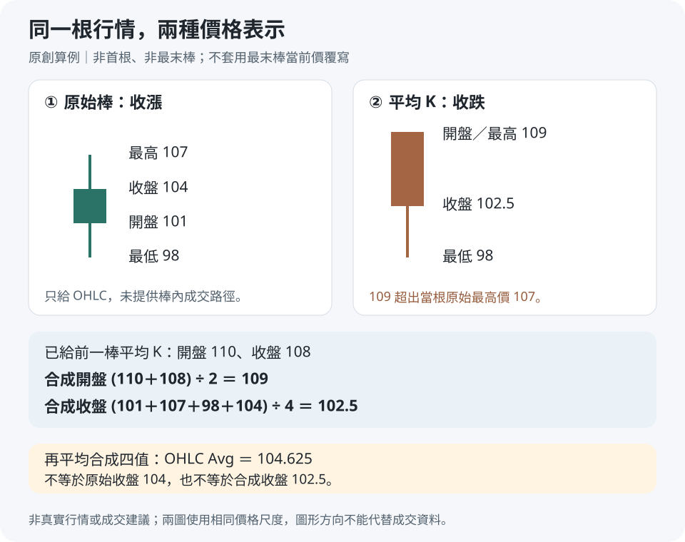
評價依據：平台對回測價格來源與平均 K 例外的直接說明。
學習用途：訊號計算資料與模擬成交資料分開記錄；原頁選項名稱為 Using standard OHLC。
限制：這是指定圖表的成交來源選項，不能保證成本、棒內路徑或即時執行都正確；本批未確認目前選單文字或宣稱實盤獲利。
熱門度：未取得獨立教材評分或績效對帳；官方功能描述不是收益證明。
實際讀取：實讀全部公開教學文字及程式範例；未執行策略、核驗圖像或操作目前介面。
翻譯範圍：精簡繁中摘要與必要短句；非全文翻譯或原程式重刊。
文件定義平均 K 的遞迴與平均公式；預設可把圖表最末棒收盤改為當前價。這項覆寫只限最末棒，不會把整份歷史還原成原始價格。
發布：確切日期未核對
頁尾最後修改日為 2025-01-24；不是首次發布日，查核日另列。
收錄：2026-11-10 · 查核：2026-11-10
這些是平均價格棒。
指 Heikin-Ashi 棒；不是逐筆委託、主動買賣量或機構行為證據。
These are average price bars.評價依據：指標發布者的計算定義、初始化與最末棒設定說明。
學習用途：核對是否為首棒、前一棒的合成值，以及 Set Close to Current Price for Last Bar 是否開啟。
限制：本算例用非首根、非最末歷史棒；不得將未完成棒、最末棒覆寫與歷史公式混算。未測試各版本軟體。
熱門度：未取得可比教學評分；公式可核對不代表策略經過獲利驗證。
實際讀取：實讀完整 Description、公式、Inputs 與 Spreadsheet 文字；未下載或執行附帶試算表、未操作軟體。
翻譯範圍：精簡繁中摘要及必要短句；算例由本站另設，非全文翻譯。
會員詢問 Last、Close 與 OHLC Avg；客服區分平均 K 收盤和對平均 K 四個欄位再次取平均。名稱相似不表示來源或數值相同。
發布：2024-07-18
兩則貼文同為 2024-07-18；頁面時區未標。工具返回較早頁首時間，不作即時互動量快照。
收錄：2026-11-10 · 查核：2026-11-10
我們交替使用 Last 與 Close 這兩個名稱。
客服在此平均 K 指標欄位語境的說明；不把所有商品的 Last 都改定義成平均價。
We use the terms Last and Close interchangeably.評價依據：發問與客服回答可分辨角色、日期與指標語境。
學習用途：原始收盤、平均 K 收盤與平均 K OHLC Avg 分欄核對，不能只憑 Last 名稱串接資料。
限制：原答以 only 描述最末棒覆寫條件；本站另作算術校註：合成平均也可能偶然等於原始收盤，同值不證明來源相同。未採未核驗的顏色規則。
熱門度：貼文感謝數或檢視數不作獲利證明，未列為即時熱門排名。
實際讀取：實讀整頁兩則可見貼文，摘要採第 2 則客服對欄位的答覆；未操作軟體、未驗證預設顏色或執行測試。
翻譯範圍：指定答覆的繁中摘要與八詞短句；不是整串逐字翻譯。
Fraser 以點數圖估計派發後的目標區；到價後仍須觀察停止行為，也可能整理後續跌。價格投射不等於反轉保證。
發布：2016-01-16
原頁列 January 16, 2016 at 03:08 PM；時區未標。舊網址重新導向至目前文章頁。
收錄：2026-11-09 · 查核：2026-11-09
到達價格目標可能只帶來較長的停頓。
原句後續指出趨勢仍可能延續；不是到價立刻反向進場的指令。
Reaching a price objective can result in an extended pause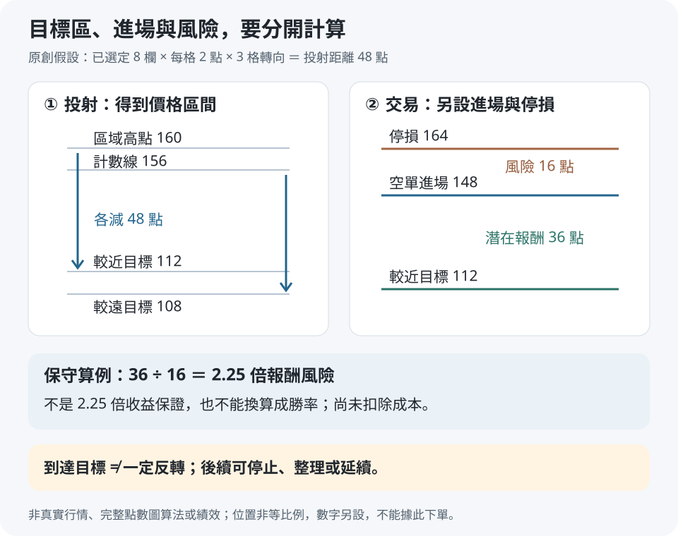
評價依據：作者在其公開專欄直接說明做法與限制。
學習用途：將目標區與後續價格反應分開；作者提出以保守目標評估至少三比一的報酬風險準則。
限制：三比一是本文交易篩選準則，並非命中率、所有威科夫版本的必要條件，亦非微台或 BTC 實測門檻。
熱門度：未取得可比獨立教學評分或帳戶對帳；平台作者介紹不作獲利證明。
實際讀取：實讀完整公開文章文字，含計數、目標區、保守報酬風險與到價後行為；未核驗原圖、重建歷史行情或檢驗績效。
翻譯範圍：精簡繁中摘要與必要短句，原文入口保留；不是全文翻譯或原圖重刊。
第三步以橫向計數估計價格目標，並要求目標距離配合持有期間。目標只是參考，後續價量特徵仍需持續檢查。
發布：確切日期未核對
首次發布與修訂日期未核對；頁尾 ©2009 是版權年份，不當作發文日。
收錄：2026-11-09 · 查核：2026-11-09
它們僅提供參考指引。
They 指點數圖、計數與目標；保留 only 的限制，不改成保證實現的預測。
They provide indications only.評價依據：機構公開教材的直接文字；頁面未列個人作者。
學習用途：先固定圖表規格與目標範圍，再記錄是否出現不支持原假說的新價量。
限制：原文關於指數與衍生商品計數可靠性的比較未附可重算實證，本卡不採為交易結論。未指定本文通用最小計數門檻。
熱門度：未取得獨立教材評分、樣本或績效驗證；不因機構署名補造排名。
實際讀取：實讀 Step Three 全部公開教學正文，含目標區、指數／個股、持有期間與結語；未觀看付費課程、核驗圖片或測試原文可靠性主張。
翻譯範圍：精簡繁中摘要與四詞短句；不重刊整篇或完整翻譯。
作者在區間高檔討論均線回測：價格下跌靠近，或橫盤等待均線上移。日線背景與當日開盤預期分開閱讀。
發布：2023-12-06
歷史報告日期；未取得首次發表及後續編輯的完整版本快照。
收錄：2026-11-08 · 查核：2026-11-08
2023-12-06 的美國開盤情境；該句未明訂趨勢維持多久。
作者當日機率判讀；本文未列樣本分母或估計方法，不當作已驗證交易勝率。
若未出現這個均線回測，上檔空間很可能受限。
it 承接未來數週回測均線的預期；保留條件與 probably 的近似語氣，不改成當天必跌。
Without it, the upside is probably limited.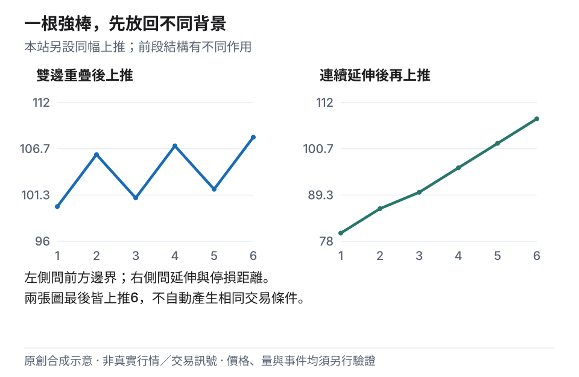
評價依據：可核對日期與署名的原作者公開評論。
學習用途：區分均線回測的不同路徑，以及日線與開盤的判斷期限。
限制：未取得可鎖定盤前版本與實際結果的對帳；百分比保留為該篇表述，不能直接搬成微台或 BTC 勝率。
熱門度：原作者網站含課程銷售；未取得可比獨立評分，不補造熱門排名。
實際讀取：實讀全部公開文字，包括 Emini 日線／五分鐘預期、EURUSD、圖表說明與兩則可見留言；未核驗原圖、觀看影片或付費課。
翻譯範圍：只摘要 Emini 背景、指定機率及必要短句；不是完整文章或留言翻譯。
Main／Forex 共用基礎 18A · 交易區間
相關主題補讀；Brad 本文不是本單元逐字稿。公開課綱相關列與單元標題已核對，未觀看付費影片。 · 官方單元 ↗
來源文章與官方課程分開歸屬，未觀看付費內容。
作者偏向日線第二段下跌，同時討論大跌後的短線整理。開盤路徑、兩小時橫盤與全天趨勢各有不同事件定義。
發布：2025-02-24
歷史報告日期；原頁日線段落有重複文字，未當作兩份獨立證據。
收錄：2026-11-08 · 查核：2026-11-08
2025-02-24 日內預期；未要求橫盤必須從開盤那刻開始。
同日的組合路徑事件；不是交易勝率。
同日全天事件；這一句明確包含持續全天。
皆為作者當日判讀，本文未列樣本分母或估計方法。事件可能重疊，不能直接相加或當獨立機率相乘。
交易者不可勉強下單。
原文條件是無法提出可辯護的數學理由；不是保證等待某段時間後就有交易機會。
traders must not force trades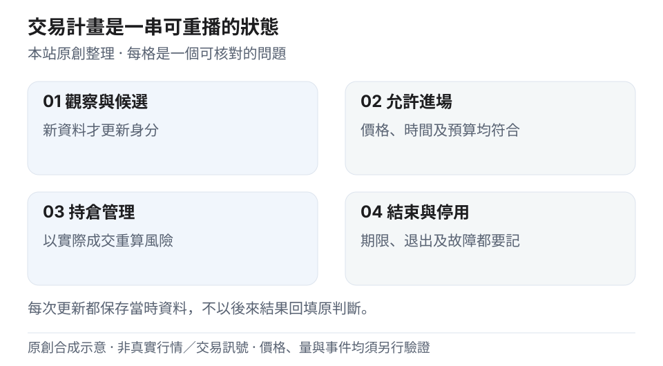
評價依據：帶日期、作者及事件窗口的原始文字。
學習用途：將數字連回事件及期限，保留定性判斷，不自行補造第二段下跌的百分比。
限制：未取得可鎖定盤前版本及結果對帳；沒有用事後頁面證明預測命中，日內機率也不能替日線或別的市場背書。
熱門度：官網評論與付費課程分開歸屬；未取得可比獨立評分或帳戶績效。
實際讀取：實讀全部公開文字，包括 Emini 日線／五分鐘預期、EURUSD 與圖表說明；未核驗原圖、觀看盤後影片或付費課。
翻譯範圍：只摘要 Emini 多週期背景、三項指定機率與必要短句；不是全文翻譯或績效檢驗。
Main／Forex 共用基礎 15A · 突破
相關主題補讀；Brad 本文不是本單元逐字稿。公開課綱相關列與單元標題已核對，未觀看付費影片。 · 官方單元 ↗
來源文章與官方課程分開歸屬，未觀看付費內容。
局部轉折需要後續 K 線確認；Zigzag 最新實線與投影又可能更新。標籤畫回舊棒，不代表當時已有訊號。
發布：發布日未核對
動態官方文件；發布及修訂確日未核對。
收錄：2026-11-07 · 查核：2026-11-07
Zigzag 最新的實線並非最終結果。
原文區分確認延遲與最新線段的可變性；局部轉折點已確認，不等於最新連線永久固定。
The latest solid line in the Zigzag is not final.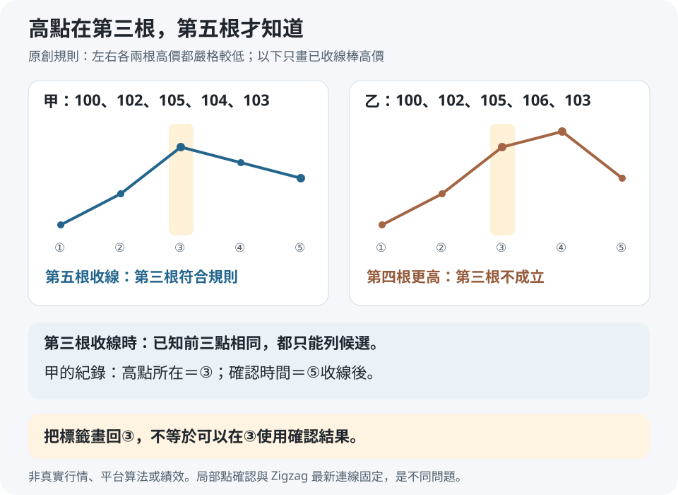
評價依據：指標發布者的直接定義與限制。
學習用途：分別保存轉折點所在時間、確認時間與決策時點。
限制：左右比較及相等價格的處理有具體定義；本站嚴格兩左兩右例題另立規則，不冒充相同算法或可獲利策略。
熱門度：官方文件不是獨立績效驗證；沒有可比教學評分，不補造星等。
實際讀取：實讀完整公開教學文字，包括計算、投影、限制與輸入說明；未觀看嵌入影片、核驗原圖或執行指標。
翻譯範圍：精簡繁中摘要與必要短句；不是整篇翻譯或平台算法重建。
會員質疑對照圖設定不同，工程團隊建議收線計算；發問者仍自述各設定均會發生。保留分歧，不宣稱問題已證實或已解決。
發布：2021-11-25
發問日為 2021-11-25，採用答覆涵蓋 11-26 至 11-29；頁面時區未標。
收錄：2026-11-07 · 查核：2026-11-07
你試過用收線時計算嗎？
2021-11-26 第三則貼文，User907968 的提問；不是官方修復保證，也不是 Brooks 課程原話。
Did you try using calculate on close?評價依據：可核對發問、會員回覆及工程團隊答覆的順序與角色。
學習用途：比較前先固定計算模式、輸入價、版本與時間快照。
限制：會員對截圖設定的判讀及發問者反駁，均未經本站實驗核驗；收線計算不被泛化為消除所有回溯變動。
熱門度：沒有可比教學評分或帳戶對帳；討論串互動不作獲利證明。
實際讀取：實讀此頁十一則可見貼文文字，摘要採用第 1、3、4、7、10、11 則；未核驗附件截圖、重現設定或測試軟體。
翻譯範圍：指定貼文的繁中摘要與必要短句；不重刊整串、附件或附帶廣告。
此屬性僅用於回測。預設 false 要求價格穿越限價；設為 true 則可在到達限價時算成交。這是模擬算法選擇，不是實盤成交承諾。
發布：發布日未核對
官方動態文件，未確認發布或修訂確日。
收錄：2026-11-06 · 查核：2026-11-06
僅供回測用途。
原文對較寬鬆成交算法的適用範圍；不據此宣稱實盤掛單也會在觸價時成交。
for back-testing purposes only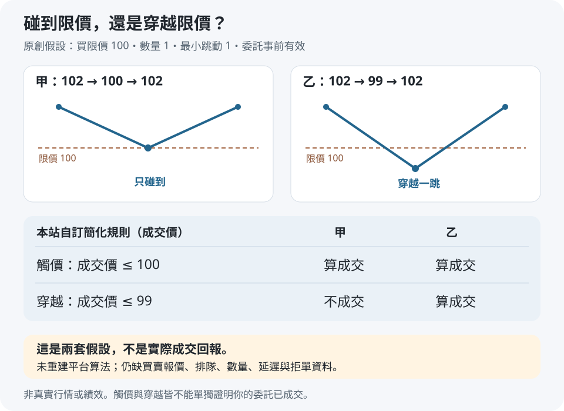
評價依據：軟體發布者對該屬性的直接說明。
學習用途：比較策略結果前，把限價成交設定固定並保存。
限制：單一屬性的說明不是完整撮合、延遲、數量與佇列模型；不直接套用其他平台或商品。
熱門度：官方文件不是獨立績效驗證；未取得可比教學評分，不補造星等。
實際讀取：實讀此頁的定義、預設值、設定時機警語、語法與程式範例；未執行程式或操作軟體。
翻譯範圍：精簡繁中摘要與四詞必要短句；非全文翻譯或範例程式重刊。
2024 年客服答覆區分回放成交與估計佇列位置；本次另讀現行文件的相關段落，保留回放、非回放模擬及實盤之間的界線。
發布：2024-03-29
指定答覆顯示 13:28:12，時區未標；不是今日新文。
收錄：2026-11-06 · 查核：2026-11-06
成交處理將不會依據該「估計佇列位置」。
這是該答覆對回放的說明；Estimated 仍是估計，不能當成真實交易所順位或所有版本的實測結果。
the order filling is not going to be based on the actual Estimated Position in Queue評價依據：具日期及客服署名的第一手答覆，與本次官方文件分開核對。
學習用途：先標記執行模式，再判斷佇列顯示是否參與模擬成交。
限制：2024 年答覆不等於所有現行設定的完整規格；未驗證軟體實際行為或真實交易所排隊。
熱門度：查核時此則答覆顯示致謝數為 0，僅是互動快照，不是品質分數或獲利證明。
實際讀取：實讀 PostID 377537 的單則完整公開客服答覆；未讀完整討論串、測試歷史版本或取得使用者委託紀錄。另核對官方《交易模擬》文件的買賣價與限價相關段落。
翻譯範圍：指定答覆的繁中摘要與十六詞短句；不是整串翻譯，未重刊附帶廣告。
文章連接市場背景、群組與個股強弱、價量型態及風險規劃。相對表現是與基準比較；原文也將方法限定為概括指引。
發布：發布日未核對
公開動態教材，未確認發布或修訂確日。
收錄：2026-11-05 · 查核：2026-11-05
概括性的指引，而非精確科學。
原文結語對方法的限定，不替某個型態提供勝率。
broad guidelines, not an exact science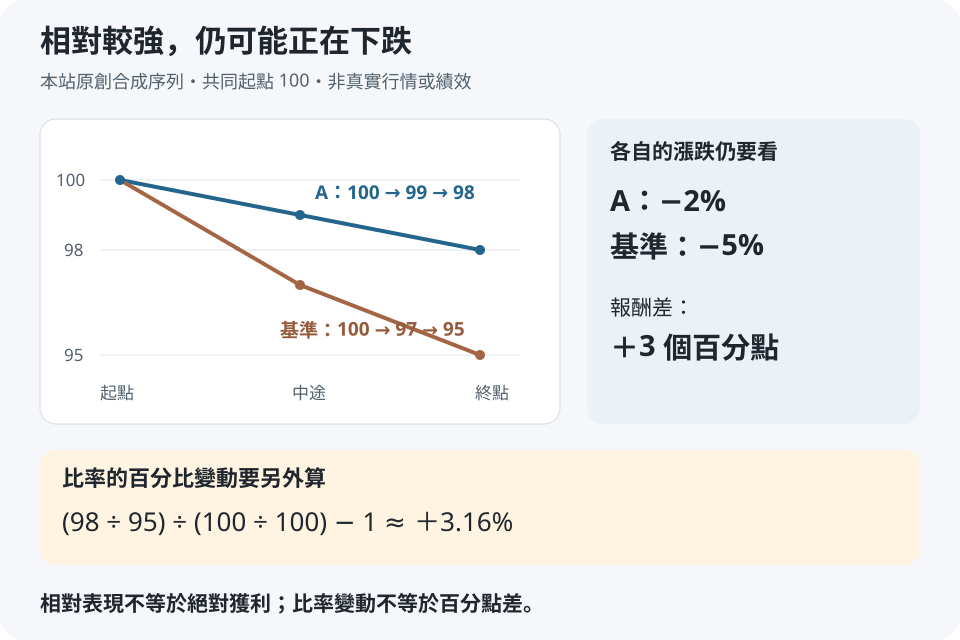
評價依據：教材發布者的公開教學，可核對框架與語境。
學習用途：同時保留基準方向、相對表現與標的本身漲跌。
限制：XLF 範例前段的 strength 與後文 weakness 措辭不一致，本批不採其圖例作核驗案例；股票框架不直接視為微台或 BTC 策略。
熱門度：商業教材入口含書籍連結，未取得獨立教學評分或獲利驗證。
實際讀取：實讀完整公開教學文字、個股案例敘述、風險與結語；未逐圖核驗行情、操作平台或讀取外鏈書籍。
翻譯範圍：精簡繁中摘要與六詞短句，非完整文章翻譯。
以兩個價格相除衡量相對表現，原始比值受價格尺度影響。頁面把報酬差寫成等於比率每日變動的措辭，需另作精確算術核對。
發布：發布日未核對
動態官方教材；發布及修訂確日未核對。
收錄：2026-11-05 · 查核：2026-11-05
也等於價格比率的每日變動。
原文使用 equal；本站校註指出報酬差與比率的百分比變動通常不精確相等，原創算例分別計算。
also equal to the daily changes in the Price Relative評價依據：原文公式與限制可核對；教材措辭仍需檢查。
學習用途：從同一起點比較，分清百分點差與比率百分比變動。
限制：不將原頁 equal 措辭直接視為精確等式；公開案例不是策略績效驗證。
熱門度：商業平台自有教材，無可比獨立評分。
實際讀取：實讀完整公開教學文字、計算、解讀、案例敘述、限制與平台操作文字；未核驗原圖、外鏈試算表、書籍或操作平台。
翻譯範圍：精簡繁中摘要與十詞必要短句，原文說法和本站算術校註分開。
對角比較使用相鄰價位的 Bid／Ask 量；小量門檻與零值設定會改變標色。比例相同，不代表比較範圍相同。
發布：發布日未核對
動態官方文件；未確認最初發布或最近更新確日。
收錄：2026-11-04 · 查核：2026-11-04
兩者都小於門檻。
最低比較量設定的條件是兩個被比較量都低於門檻，不是任何一側低就略過。
both less than the threshold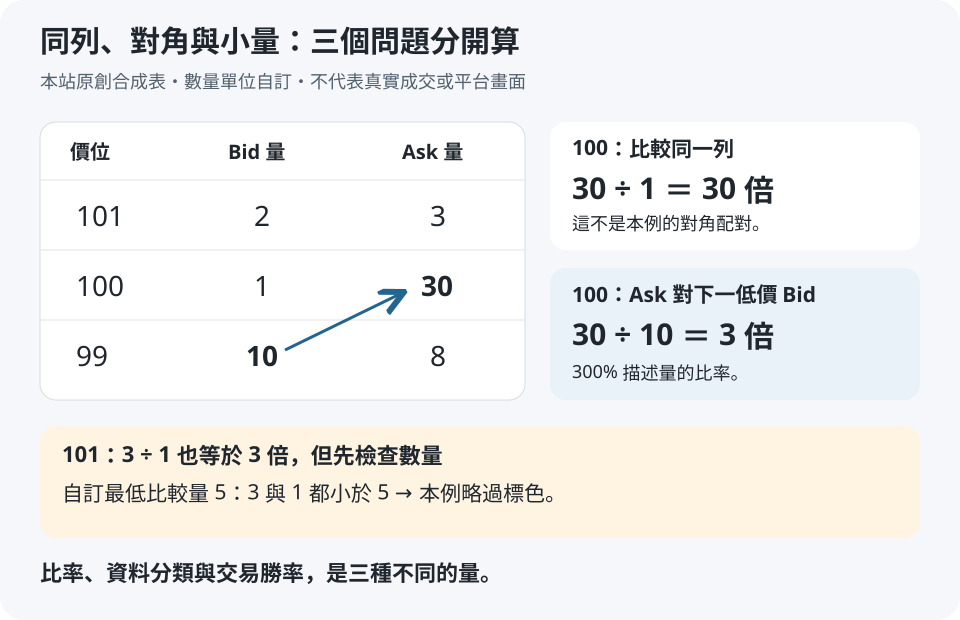
評價依據：官方計算規格，適合核對欄位定義。
學習用途：先保存配對價位與設定，再解讀顏色。
限制：未驗證交易績效；官方規格不是獨立教學評分。
熱門度：未取得可比評分，不造星等或熱門排名。
實際讀取：實讀定義中的對角比較、最低比較量、極端價位缺值與零值分母設定；未讀完全部文件或操作軟體。
翻譯範圍：指定章節精簡摘要與五詞短句，非全文翻譯。
文件以較低週期價格方向分類買賣量，並說明歷史資料粒度及重算可能改變畫面。圖形相似，不能直接視為相同逐筆口徑。
發布：發布日未核對
官方動態說明；未確認發布及修訂確日。
收錄：2026-11-04 · 查核：2026-11-04
依據棒內價格移動的方向。
描述該平台足跡圖的成交量分類依據，不是逐筆委託身分辨識。
based on the direction of intrabar price movements評價依據：官方資料處理說明，可核對分類與限制。
學習用途：將資料口徑、棒內粒度、列寬與事件時刻一併保存。
限制：尚未實際重現平台；功能規格不是微台或 BTC 獲利證據。
熱門度：沒有獨立評分或可比熱門數據。
實際讀取：實讀 Calculation 的資料來源、分類及失衡小節，另讀警報重繪注意事項；其餘解讀與設定未逐項驗證，未觀看嵌入影片。
翻譯範圍：指定段落精簡繁中摘要與八詞短句；不重刊全文、規則清單或原圖。
原帖嘗試從 Delta 推測開倉、停損與停利；選讀回覆質疑動機推論，提醒先看價格如何回應。主帖不是經核驗的委託分類表。
發布：確日未核對
頁面僅顯示相對日期 3y ago；不換算為已核對的發布日。
收錄：2026-11-04 · 查核：2026-11-04
你並不知道他們的意圖。
Leo_The_Tiger_NQ 警告不要直接替足跡上的成交者編造動機；不是否定所有足跡研究。
you have no idea what their intentions are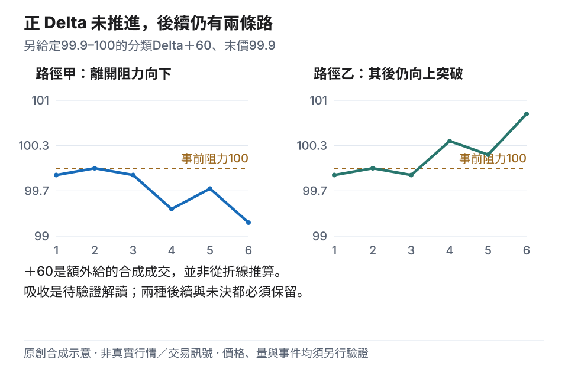
評價依據：公開經驗討論，包含反對意見與致謝。
學習用途：把成交觀察與參與者意圖的推測分開記錄。
限制：匿名或化名自述，無可核驗績效；其他留言的技術說法不一概採信。
熱門度：未取得穩定票數，不以致謝或追蹤推薦當成教學成效。
實際讀取：實讀主帖及上述三位使用者的可見回覆，另見部分反對與刪除留言；未核對所有巢狀回覆、帳戶身分或交易紀錄。
翻譯範圍：精簡選讀摘要與八詞短句；不完整翻譯討論串。
Brooks 在區間背景下留意強突破能否續行；沒有立即延續時，他會快速退出。他也談部分部位短打，但這段問答沒有數字勝率或可直接照用的等待棒數。
發布：2015-12-27
官網文章發布 2015-12-27；問答事件為 2015-09-22 交易室，不是今日行情。
收錄：2026-11-02 · 查核：2026-11-02
如果突破棒沒有立即的後續延續。
原文是 Brooks 描述自己在區間日如何管理交易的條件句，後文接快速退出；不是任何突破一律下一棒離場的量化規則。
if the breakout bar does not give me immediate follow through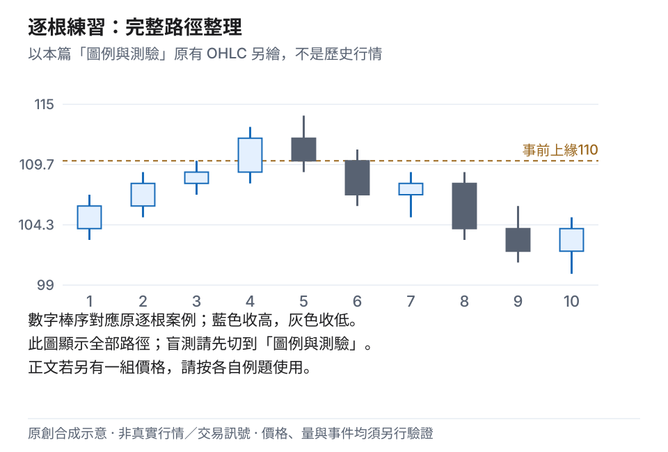
評價依據：官方問答可核對講者與日期；一則 2015 年正面讀者留言屬自選意見，不是獨立教學評鑑。
學習用途：將區間背景、後續延續和自己的部位限制分開記錄。
限制：沒有數字機率、樣本數或微台／BTC 績效；部分出場的個人管理方式不能直接套到單口持倉。
熱門度：沒有可比評分或當前收聽數，不將留言當作獲利證明。
實際讀取：實讀完整公開問答文字及一則可見讀者留言。頁面列音訊長 3 分 54 秒，但未收聽音訊、重建原圖或觀看付費課。
翻譯範圍：繁中精簡摘要與必要短句；非完整問答或音訊翻譯。
Main（共用基礎；Forex 亦可觀看） 15F · 突破：突破失敗、趨勢恢復或反轉
相關主題補讀；原問答出自 2015-09-22 交易室，不是本單元逐字稿。已核對公開課綱與會員頁標題，未觀看付費影片。 · 官方單元 ↗
來源文章與官方課程分開歸屬，未觀看付費內容。
Woods 用週線與日線的二十期簡單均線斜率組合背景及回檔，條件失效時取消委託。四個文字案例含虧損與未進場；他也承認多週期可能延遲進場或錯過獲利。
發布：2015-01-06
原文頁尾明列首次發布 2015-01-06、更新 2020-07-16；查核日另列。
收錄：2026-11-02 · 查核：2026-11-02
這個例子沒有任何交易。
第 4 個例子是沒有進場的案例；它不是已實證的避損比例，取消案件也不能直接算成獲利。
there are no trades in this example.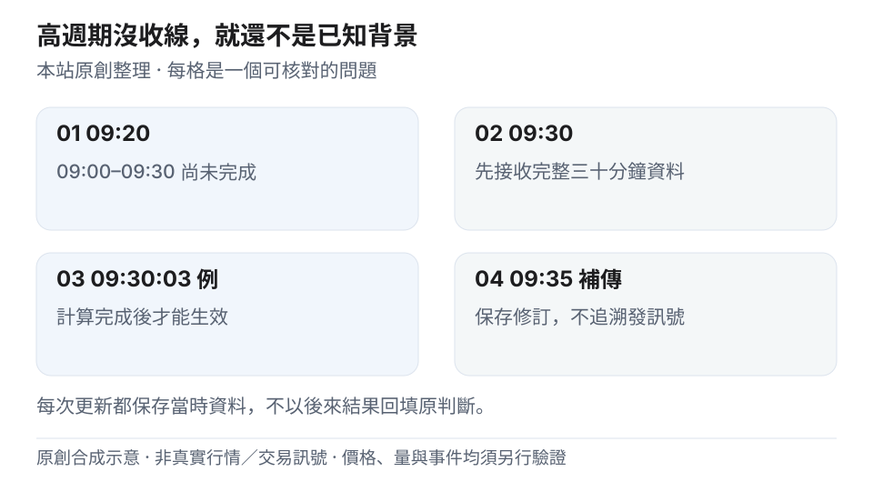
評價依據：作者公開規則與正反案例可核對；不等於獨立回測或教學成效評分。
學習用途：分開記候選、取消、到期、成交及已平倉結果。
限制：股票週線／日線案例，另有聯盟行銷揭露；原文未完整規定週棒即時取樣與轉折確認時點，不能直接當成十分鐘策略。
熱門度：未取得可比獨立評分，不補造熱門程度或勝率。
實際讀取：實讀完整公開文字：雙週期說明、多空規則、四個案例敘述及策略檢討；未核驗圖像、歷史行情或外鏈書籍。
翻譯範圍：繁中精簡摘要與必要短句；未重刊全文、完整規則清單或來源圖。
官方支援於 2024 年解釋，滾動長度指定最近幾根棒，與從日盤或時段起點累積不同。串內另記錄 2023 年實作問題與修正回覆，不能據此判定現行版本仍有同樣問題。
發布：2023-10-09
首帖為 2023-10-09；修正回覆在 2023-10-10 至 10-11，滾動定義回覆在 2024-06-24。頁首 2026 年時間不是發文日期。
收錄：2026-11-01 · 查核：2026-11-01
最近十根棒。
2024-06-24 官方第 7 則回覆，以長度 10 說明當前棒的累積範圍；沒有在此完整定義所有歷史棒及開高低的實作。
the last 10 bars.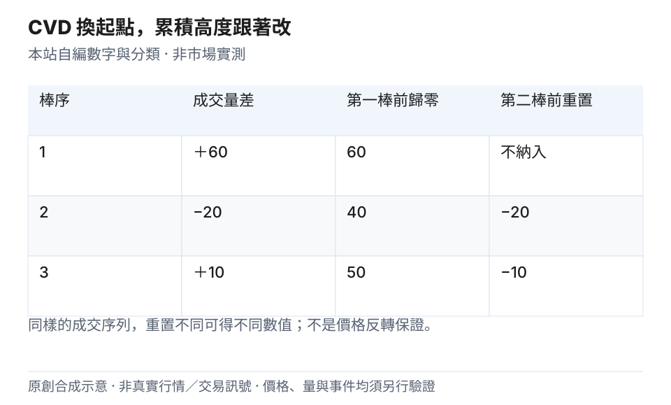
評價依據：區分使用者問題、工程回覆與官方支援的定義；不是獨立軟體驗證或獲利研究。
學習用途：把滾動窗口、固定分段歸零與時段累積分開，再保存當下輸出。
限制：歷史支援串未列可精確重現的現行版本；2023 年回覆不能當作今天的缺陷認證或更新指示。
熱門度：本次頁面與搜尋快照瀏覽量不同，未填統一數字；致謝與發文數不作教學成效證據。
實際讀取：實讀全頁八則公開貼文，摘要限第 1 至 7 則的歷史問題、修正與滾動定義；第 8 則轉談熱力圖。未安裝或重現平台版本。
翻譯範圍：繁中精簡摘要與必要短句；非整串全文翻譯。
Grimes 談預期情境未發展時的時間退出，也提醒相關部位可能集中風險。這是管理原則，未指定等待棒數。
發布：2011-10-25
原頁列 25 Oct 2011；本批續讀既有歷史來源，不當作今日行情。
收錄：2026-11-01 · 查核：2026-11-01
預期的情境沒有發展。
時間退出那一條的條件短句；作者未在此定義幾根棒或幾分鐘。
the anticipated scenario does not develop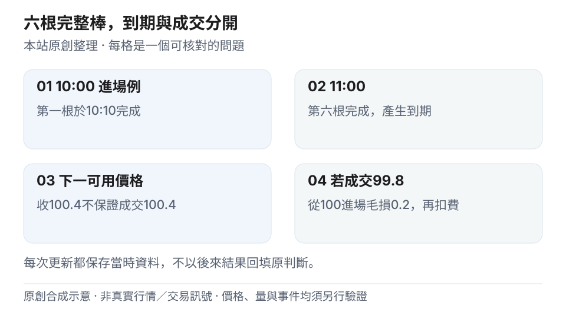
評價依據：可核對原作者正文、署名與發布日期；未取得本篇獨立教學評分。
學習用途：將等待條件、失效事件與成交時點事前分欄。
限制：作者分享個人管理原則，不是微台／BTC 的績效證據；網站連向其商業教育服務。
熱門度：未取得可比較互動數，不補造熱門排行。
實際讀取：實讀完整公開正文的交易管理與其他想法兩組規則；未讀付費教材，正文已刪去原系統的特定參數。
翻譯範圍：繁中精簡摘要及必要短句；非逐條全文翻譯。
Woods 分開討論跳過停損與進場價。尚未進場時，若設定或風險條件不成立，應略過；縮小部位也須先確認假說有效。
發布：確切日期未核對
公開正文未列可確認發布日，不以頁尾版權年份或搜尋日期補填。
收錄：2026-11-01 · 查核：2026-11-01
略過它，等待另一個交易設定。
進場跳空後，設定仍有效且風險可接受這兩項條件未滿足時的處理。
Just skip it and wait for another setup.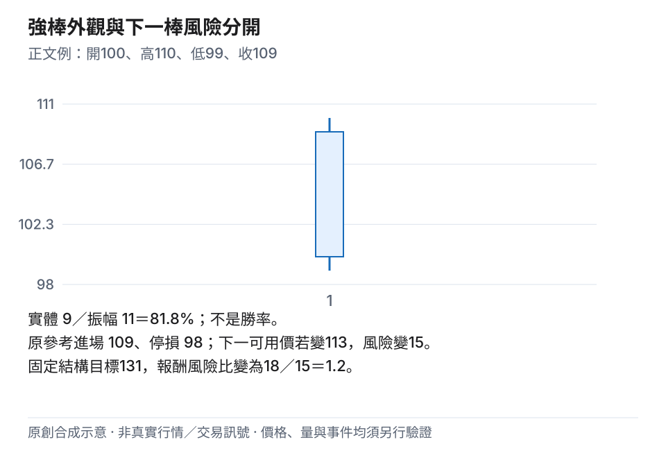
評價依據：原作者文章可核對分類與限制，未取得獨立教學評分。
學習用途：分開記錄已有持倉的退出風險，以及尚未進場的取消條件。
限制：股票隔夜情境為主，另有聯盟行銷揭露；選擇權與近乎全天市場說法未直接移植為本站建議。
熱門度：沒有可核對的當前評分或可比票數，不作人氣或獲利排名。
實際讀取：實讀完整公開正文，含停損跳空的六種處理方向、進場跳空的三種選擇及結語；未核驗圖像或外鏈書籍。
翻譯範圍：繁中精簡摘要及必要短句；不重刊全文或來源圖。
官方文件說明「賣價成交量減買價成交量」的累積、棒內高低與重置。起點、時段或資料不同，重載後可能改值；圖中開收不是價格。
發布：確切日期未核對
原頁列最後修改 2025-01-24；這不是首次發布日，查核日另列。
收錄：2026-11-01 · 查核：2026-11-01
這個指標只適用於日內圖表。
指 Sierra Chart 本項指標，不是說所有 CVD 定義都只有同一限制。
The study only works on Intraday charts.評價依據：廠商規格可核對其計算方法與資料需求，不是策略獨立成效評分。
學習用途：先記錄資料、時鐘及重置方式，再比較 CVD。
限制：平台正確性與其他平台比較屬廠商主張，未獨立核驗；數值差異不自動等於交易訊號。
熱門度：官方文件沒有可比較的學習評分，不造星等。
實際讀取：實讀完整公開正文：定義、八步計算、繪圖工具、差異排除、兩節量篩選與兩項輸入；沒有執行平台或連接行情。
翻譯範圍：繁中精簡摘要與必要短句，不翻譯或重刊整份文件。
Grimes 區分簡單與複雜回檔、越過舊轉折後快速返回的失敗測試、趨勢改變後的第一次回檔，以及突破。分類以結構為主；複雜回檔可能先使順勢交易停損，突破則要求迅速且有紀律的決策。
發布：確切日期未核對
本次公開正文未列可核對確日；不以搜尋年齡或改版時間補填，屬新收錄的既有教材。
收錄：2026-11-01 · 查核：2026-11-01
趨勢改變後的第一次回檔。
原文對 Anti 的結構描述；作者說可能是新趨勢的首次回檔，沒有保證新趨勢已成立。
first pullback following a trend change評價依據：原作者文字可核對其分類與術語；本輪未取得這一篇的獨立教學評分。
學習用途：先把型態拆成事前可見的結構，再保存未成功及未決例子。
限制：作者網站連向其教育產品；本篇沒有微台／BTC 的樣本外績效或可直接照用的量化參數。並列 spring 等名稱不代表各流派定義完全相同。
熱門度：未取得可比較互動數或獨立評分，不自造熱門順位。
實際讀取：已讀五個型態分類的完整公開文字正文；未核驗五張來源圖或讀取付費教材。
翻譯範圍：繁中短摘要與必要短句，非全文翻譯。
兩位主持人建議持續核對回測預期與實際紀錄，查出漏掉的大獲利交易、滑價、延遲及輸入錯誤。也可提高成本或隨機略過交易，檢查結果對理想執行的依賴。這些是實務建議，未提供獨立績效驗證。
發布：2025-07-07
E48，官方標示 52:52；新收錄歷史單集，非今日市場分析。
收錄：2026-11-01 · 查核：2026-11-01
持續與回測逐筆核對。
09:21 為官方逐字稿的段落標記，未核對音軌時間；主持人建議核對個別進出場。
always be reconciling to the backtest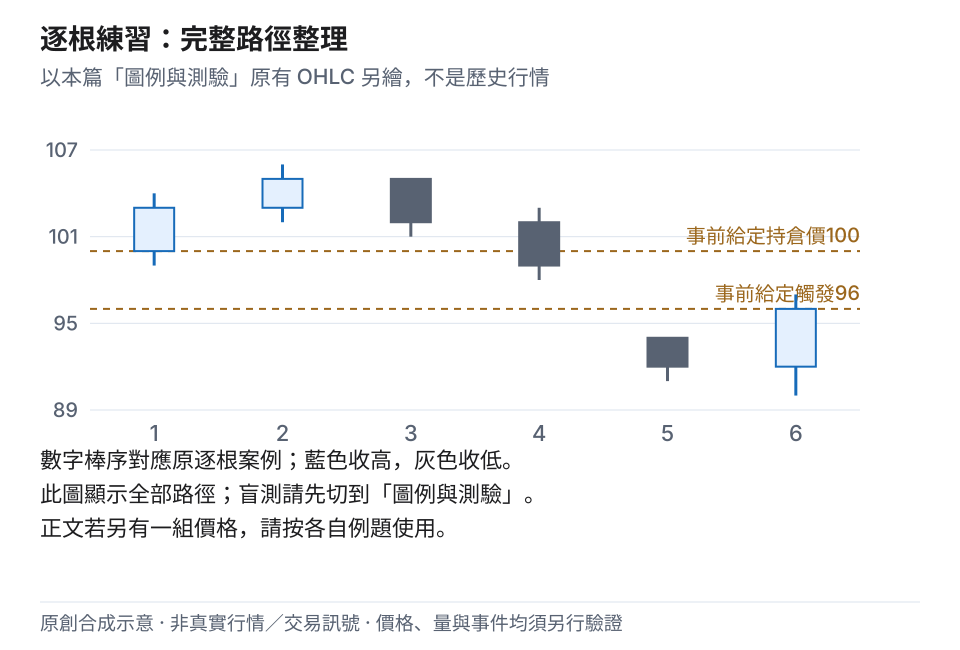
評價依據：官方逐字稿可追溯內容；Apple US 的可取得頁面與搜尋索引評分快照不一致，未填統一數值。
學習用途：本站練習：建立預期交易、觀察到的成交、漏單與成本差異對照表；先診斷，再決定是否改規則。
限制：以股票執行案例為主，不能直接套用微台／BTC；節目推廣回測郵件課與主持人的軟體／教育產品，逐字稿有辨識錯字。
熱門度：未取得 E48 的獨立成效評分；節目層級聽眾好評不等於單集品質或獲利證明。
實際讀取：研究協作實讀完整官方文字逐字稿，00:00 開場至 52:46 最後發言；主編再次核對節目資料與 09:21 前後文字。未播放或收聽音訊。
翻譯範圍：繁中短摘要與必要短句對照，不重刊整集逐字稿。
Brooks 官網連到與 Mark Holstead 的訓練訪談，標示約一小時二分鐘，主題為偏好設定、交易歷程與風險管理。本次只完成介紹與留言選讀，影片內容尚未取得。
發布：2022-06-06
此為官網介紹發布日；介紹指訪談於 2022 年 5 月舉行，未核對 YouTube 上架確日。
收錄：2026-11-01 · 查核：2026-11-01
本卡提供繁中摘要；英文全文請由原始來源查閱。
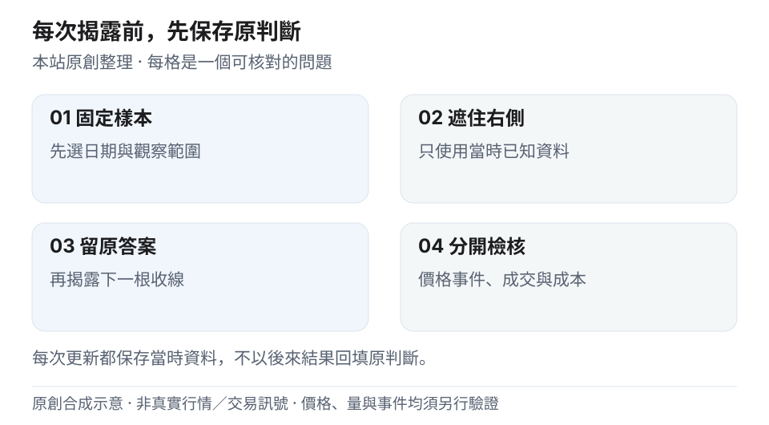
評價依據：官網有 2022 年讀者正面短評，可核對留言日期；屬自選讀者意見，非獨立成效評鑑。
學習用途：可作後續觀看入口；本站建議觀看時先記錄講者條件，再與自己的事前筆記比較。
限制：官方頁連到公開講座，不是 Main／Forex 付費單元的逐字稿。未取得影片內容，不推定其細節、勝率或交易績效。
熱門度：未取得可核對的當前 YouTube 觀看數與按讚數，不以第三方影片摘要代替原片。
實際讀取：已讀官網介紹、原始播放連結與公開讀者留言；YouTube 直接頁面本次取得失敗，未取得字幕或觀看影片。
翻譯範圍：繁中介紹摘要；不列影片正文或完整字幕翻譯。
Main（共用基礎） 15A · 突破
相關主題補讀；不是本訪談的原始課程出處，未觀看付費影片。 · 官方單元 ↗
來源文章與官方課程分開歸屬，未觀看付費內容。
Main（共用基礎） 33A · 保護停損
相關主題補讀；依公開課綱核對主題，不表示已讀本訪談細節。 · 官方單元 ↗
來源文章與官方課程分開歸屬，未觀看付費內容。
官方支援先要求確認收到幾檔深度，再檢查顯示欄位。2022 年個案只有一檔，因此沒有掛單增減資訊，但仍應有該檔近期成交量；2023 年另提醒檢查價格檔位合併設定。相似的空白畫面，原因可能不同。
發布：2017-01-09
首帖為 2017-01-09；續帖含 2022-07-11、2023-10-09，屬新收錄歷史案例。
收錄：2026-10-31 · 查核：2026-10-31
只收到一檔市場深度。
2022-07-11 官方第 11 則回覆，僅指該使用者個案，不是所有商品的通用限制。
only getting 1 depth level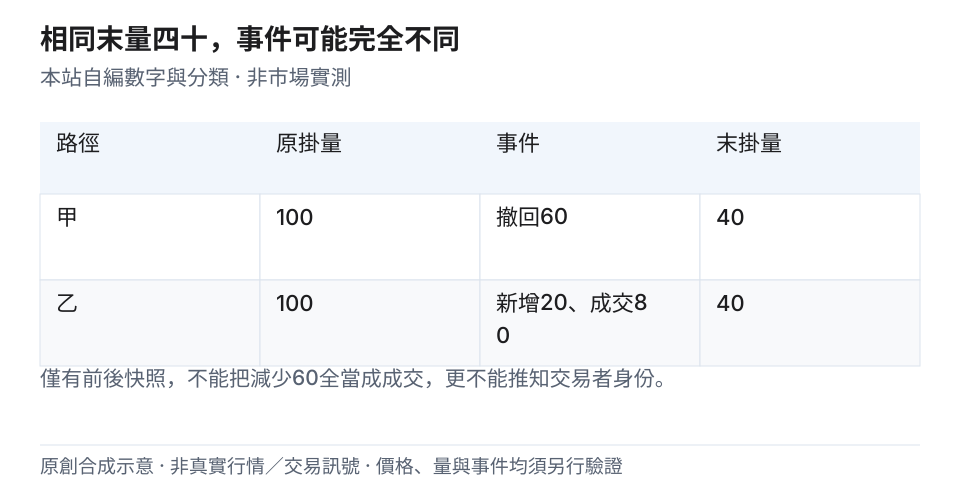
評價依據：官方支援回覆可用來辨識功能與資料問題；多個年份的個案分開讀。
學習用途：本站校註：畫面空白先查資料與顯示設定，不能直接推斷沒有交易或流動性。
限制：舊版個案，今日介面須另查，未重現結果。軟體與行情為商業服務，簽名亦推廣下單服務；非獲利證明。
熱門度：未取得獨立評分，不以瀏覽量或 Thank you 數作好評率。
實際讀取：已讀單頁第 1–13 則全部公開文字；未核驗附件圖片、外連文件或重現軟體設定。
翻譯範圍：繁中短摘要與必要短句，非全文翻譯。
Villahermosa 區分 A 階段的次級測試與可出現在不同位置的一般測試，重視相對量能與棒幅，也承認區間結局未確認時，標記帶有判斷。正文與問答對位置強弱有用語差異，不能直接合併成固定進場規則。
發布：確切日期未核對
公開正文未列可核對發布日，不以搜尋抓取日或版權年份補填。
收錄：2026-10-31 · 查核：2026-10-31
作為事件，取決於它所在的位置。
原文區分一般行為與依結構位置辨識的事件；不是只看一根窄棒就認定累積成功。
as an event (depending on location)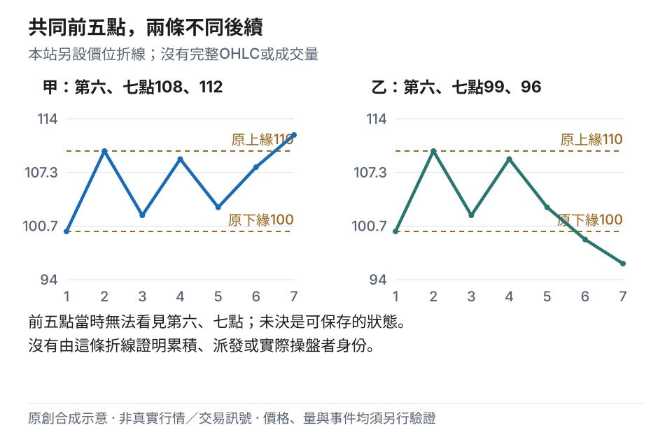
評價依據：原作者說明可辨識其用語，適合比較結構事件與一般測試；不視為所有威科夫作者的共同規範。
學習用途：先記錄位置、相對量能與後續，再標記事件；遇到來源內部差異要註記。
限制：正文將略低於賣出高潮低點的測試偏向賣方，問答另稱極低量情況可顯強；條件與用語尚未調和。網站推廣書籍課程，未提供本摘要可核驗的樣本外績效。
熱門度：未取得獨立評分；頁面暢銷標籤不是可比人氣或策略成效證據。
實際讀取：已讀英文公開正文、問答與書籍推廣說明；未核驗原圖、播放西語影片或閱讀完整商業書籍。
翻譯範圍：繁中短摘要與必要短句，非書籍或全文翻譯。
Grimes 回顧 XLE 看空想法卻遇到向上跳空；他說因未出現向下突破而沒有下單。重點是事前觸發、持有條件，以及願意放下原先看法。
發布：2022-10-07
新收錄的歷史文章，非今日市場分析。
收錄：2026-10-30 · 查核：2026-10-30
未發生任何交易。
作者對該次個案的自述；不是所有錯誤想法都能避損的保證。
no trades were entered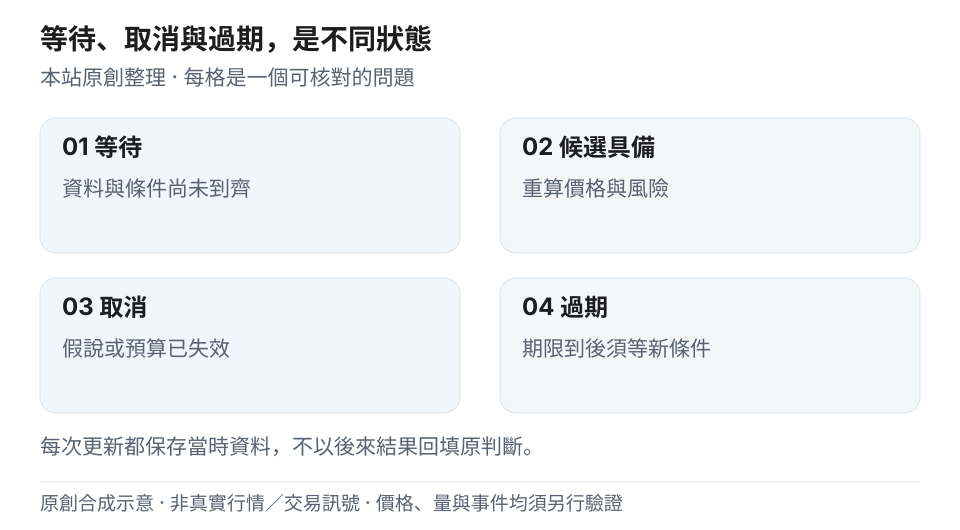
評價依據：把未觸發與已成交交易分開。
學習用途：先寫觸發及失效條件，再看結果。
限制：作者連結商業服務；個案與自述零損益未獨立驗證。
熱門度：未取得獨立評分，不填星等。
實際讀取：已讀 XLE 背景、觸發與持有條件、彈性調整及結語；未核驗原圖或成交。
翻譯範圍：短摘要與必要短句，非全文翻譯。
Woods 整理 Sho 的順勢想法，以肯特納通道、回檔與訊號棒搭配，並展示停損反例。他明說這只是方法的一種整理，並非規則固定的交易系統。
發布：確切日期未核對
正文未列確日，不以版權年份或搜尋年齡補填。
收錄：2026-10-30 · 查核：2026-10-30
不是一套規則固定的系統。
結語限制本文規則的身分；A++ 是作者評級，50% 是回檔位置，均非實測勝率。
not a rigid system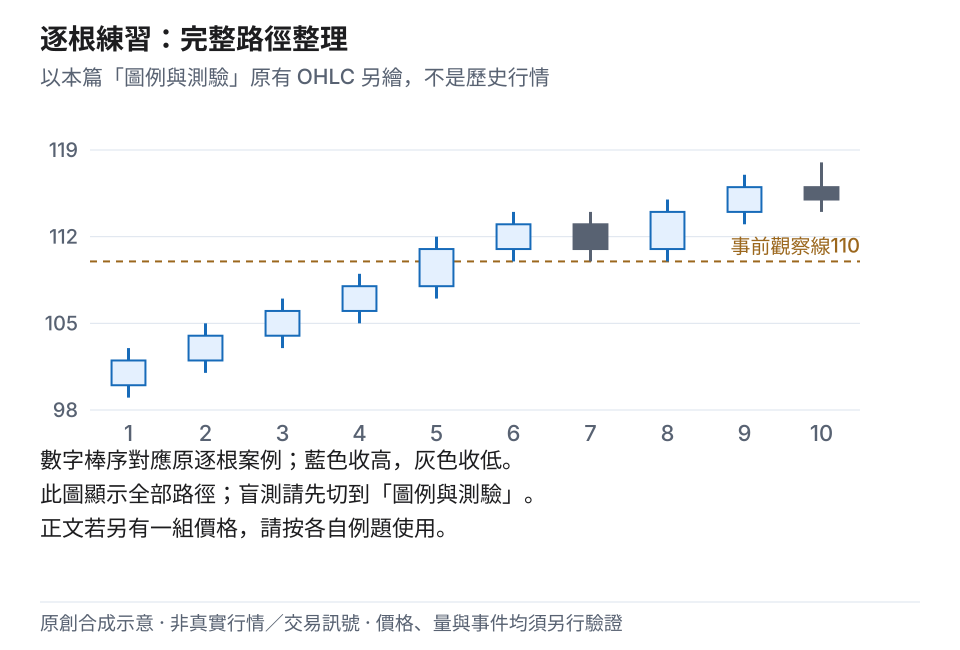
評價依據：成功與失敗例並列。
學習用途：檢查回檔中的逆向力道及背景。
限制：網站推廣教材；選例非實際交易，未驗證微台／BTC 成效。
熱門度：未取得獨立評分，不把 A++ 當好評率。
實際讀取：已讀規則、多空例子、檢討與頁尾限制；未核驗圖表、外連討論串或 PDF。
翻譯範圍：短摘要與必要短句，非全文翻譯。
文章結合內包棒與最近四棒最小棒幅，作為縮幅後的觸發；方向仍須先由背景判斷。作者明列下一棒未觸發就取消，也展示區間上緣多單失敗，提醒不能孤立使用型態。
發布：2013-01-31
原頁末明列更新日 2021-04-29；新收錄不等於新發表。
收錄：2026-10-30 · 查核：2026-10-30
內包棒甚至可能成為陷阱。
結語討論盤整時，這個型態可能只是擁擠區間的一部分；原句語氣保留為可能。
The inside bar might even be a trap.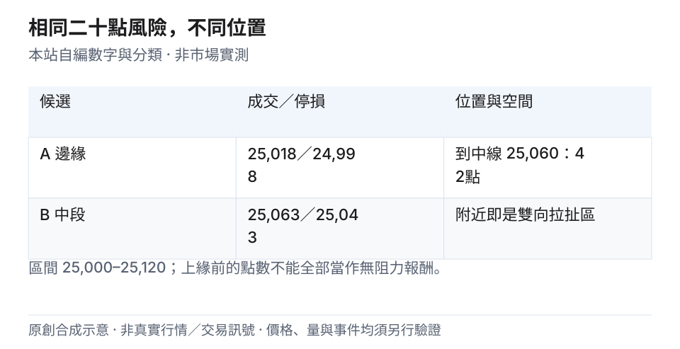
評價依據：原作者將明確型態、取消條件與虧損反例並列。
學習用途：先固定背景、觸發與有效期限；此文內包採更低高點及更高低點，Brooks 詞表允許同價，須保留不同規則版本。
限制：作者銷售指標並揭露書籍聯盟佣金；案例不是實際交易，沒有微台／BTC 樣本外成效。
熱門度：未取得可核對的獨立教學評分或一致人氣數字，不填星等。
實際讀取：已讀公開定義、規則、指引、四個案例與結語；未執行指標、複算交易或重製原圖。
翻譯範圍：精簡繁中摘要與必要短句翻譯；不是整篇逐字稿或可直接交易的完整系統。
Woods 區分持有不利部位的被套者，以及提早退出後踏空的交易者，用期貨、外匯與股票例子比較。重點是前段背景、重要位置與後續反應，不是看見外包棒失敗就直接進場。
發布：確切日期未核對
正文未列確切發布日；不把搜尋引擎的相對年齡換算為發表日期。
收錄：2026-10-30 · 查核：2026-10-30
這個概念本身並不是一套交易策略。
開頭限定被套交易者是協助尋找背景的觀念，尚不是完整規則。
It is not a trading strategy per se.評價依據：原作者明說觀念不等於策略，且提供跨市場與週期的對照。
學習用途：分清被套與踏空，再尋找價格可觀察的支持或反對證據。
限制：三個選例不能證明勝率；K 線不識別真實持倉或心理。網站推廣教材，案例明示不是實際交易。
熱門度：沒有取得獨立教學評分；不把搜尋排名當成好評率。
實際讀取：已讀三個案例、背景／對比／自我控制結語與頁尾說明；未重製圖片、讀取外連全文或確認真實帳戶部位。
翻譯範圍：精簡繁中摘要與必要英文短句；圖中的交易者心理仍是作者解釋。
作者把收盤位置、成交量與後續走勢分開檢查，提醒拉回可能只是測試，不能把所有失敗都稱為洗盤。案例沒有量能時，他明說只依價格與後續反應判斷；不同市場條件仍須重新核對。
發布：2026-09-04
頁尾首次發表及最後更新均列 2026-09-04。
收錄：2026-10-30 · 查核：2026-10-30
原文已為繁中，本卡提供摘要。
評價依據：公開文章清楚列觀察順序與資料缺項，可作繁中入門對照。
學習用途：用後續反應檢查原假設，資料沒提供時不補造量能判斷。
限制：同頁推廣作者課程；未取得獨立評分、完整成交或策略樣本外結果。股票案例不直接等於微台／BTC 規則。
熱門度：未取得可核對的獨立評分或熱門度快照，不列獲利推薦榜。
實際讀取：已讀公開正文、兩個股票歷史案例、檢查表、FAQ 與作者日期；未觀看推廣課程。
翻譯範圍：原文為繁體中文，不需翻譯；本卡另寫短摘要，不重製原圖或課程。
官方支援說明，掛單增加與撤減由市場深度變化推導，並非另外儲存的一套資料。回放需要對應時段的深度歷史；連續期貨跨換月時，也可能需要逐契約取得資料。
發布：2025-02-01
實讀首帖至 2025-02-17 回覆；原頁時間的時區未核對。
收錄：2026-10-29 · 查核：2026-10-29
你儲存的是市場深度資料；掛單增加／撤減資料是由它推導而來。
第 4 則，2025-02-04；官方支援回答是否需要另外記錄掛單增加／撤減資料。
You are storing the Market Depth data, from which the Pulling/Stacking data is derived.評價依據：公開支援串可區分官方支援與一般會員，適合核對資料依賴及排錯順序。
學習用途：區分成交歷史、深度歷史、衍生欄位與實際契約，避免只因有 K 線回放就推定有訂單流回放。
限制：2025 年特定軟體問題，不證明目前每個商品的可下載年限或任何策略成效；不把刪檔排錯做法改寫成本站操作指令。
熱門度：瀏覽次數的搜尋及原頁快照不同，未採用人氣數字；沒有獨立教學成效評分。
實際讀取：已讀單頁第 1–14 則全部文字；未操作軟體、下載或驗證深度歷史。
翻譯範圍：公開討論的短摘要與必要短句；不是軟體操作手冊全文。
作者依形成、存續、回補與老化追蹤三棒失衡區域，再用大小、返回速度、相對量及觸及後反應評分。分數用於比較模型內事件；作者明說高分不保證方向結果，提醒也不是交易指令。
發布：確切日期未核對
頁面顯示 4 月 6 日、更新 6 月 13 日；年份未可靠核對，不補造完整日期。
收錄：2026-10-29 · 查核：2026-10-29
高分並不保證價格會出現某個方向的結果。
公開說明的限制與透明度段落；同段也說低分不自動使區域失去背景價值。
A high score does not guarantee a directional outcome.評價依據：作者主動揭露評分屬模型，而非未來價格的客觀真理；這個界線有助於閱讀工具宣傳。
學習用途：先問分數的輸入、計算時點及是否使用後來資訊，再區分評分、事件比例與交易勝率。
限制：屬第三方自有 ICT 風格工具；開放原始碼標籤不等於本站已審查程式，沒有獨立績效證據。
熱門度：圖示數字口徑未清楚核對，未填喜歡數、使用者數或好評率。
實際讀取：已讀公開說明的辨識、追蹤、老化、回補、評分、提醒及限制；未讀程式碼、執行指標或驗證非重繪與績效。
翻譯範圍：第三方工具說明的短摘要與短句翻譯；不是 ICT 原課、程式全文或策略驗證。
教材以棒幅、成交量及測試低點位置比較下破回收後的測試品質：較窄棒幅、較低量與較高低點被視為較佳，也保留較低品質不必然失敗的例外。後續測試、退出保護及風險報酬需一起考慮。
發布：確切日期未核對
PDF 未列發表日，不把搜尋引擎估計時間當成發布日期；未列個人作者。
收錄：2026-10-29 · 查核：2026-10-29
然而，並非所有品質較低的測試都會失敗。
PDF 第 1 頁；原文先保留例外，再談低點更低、量較大等疑慮。
However, not all lower quality tests fail.評價依據：教育機構提供的可追溯短教材，包含品質比較與例外語句。
學習用途：練習把較佳／較差品質保留為相對判讀；此處 price spread 是棒幅，並非買賣價差。
限制：三比一等條件是該教材建議，不取代本站 2R 研究版本，也不是微台或 BTC 的實測勝率。
熱門度：未取得獨立成效評分，不以機構身分推論交易優勢。
實際讀取：已讀公開 PDF 兩頁全部文字；未重製原圖或取得完整翻譯授權。
翻譯範圍：公開教材的短摘要及必要短句；不是兩頁全文譯文。
原文以理想化圖式整理累積與派發，也明示基本累積模型不能涵蓋交易區間的所有變化。
發布：確切日期未核對
刊物明列 Issue 55、2006 年 3 月；不以 2019 年下載路徑當成發表日期。
收錄：2026-10-29 · 查核：2026-10-29
這個基本模型並沒有為所有可能的變化提供圖式。
原文第 1 頁（刊頁 6）的累積模型說明；不是宣稱可以預先識別每段行情。
this basic model does not offer a schematic for all the possible variations評價依據：原作者文章，由威科夫教育機構公開提供；模型出處可追溯。
學習用途：適合比較圖式與實際觀察，練習保留未決及反例。
限制：示意模型及歷史案例不是微台／BTC 的樣本外回測；沒有把複合操盤者敘事當成可識別身份。
熱門度：沒有取得獨立成效評分；不以刊物身分取代交易驗證。
實際讀取：已讀公開 PDF 的文字，核對作者、刊期與模型限制；未重製圖式或原文市場圖。
翻譯範圍：來源短摘要與必要短句翻譯；非論文全文譯文。
作者列出觸及、中線、完整回補及反轉後事件，並明示統計表只是描述圖上缺口行為，不是勝率。
發布：確切日期未核對
頁面只顯示相對時間；確切發布日未核對。
收錄：2026-10-29 · 查核：2026-10-29
這張表是描述性的。它呈現缺口在這張圖上的表現；它不是勝率。
對應原頁 Statistics 段落；不同事件的分母仍須各自核對。
The table is descriptive. It shows how gaps behaved on this chart; it is not a win rate.評價依據：作者主動區分統計與勝率，值得作為閱讀指標說明的案例。
學習用途：先查分母、觀察窗口、觸價與收盤差別，再討論交易績效。
限制：原頁稱 FVG 是未成交空間；僅三棒幾何不足以證明該區從未成交。非重繪與交易優勢也需分別驗證。
熱門度：圖示數字未能可靠辨認口徑，沒有換算熱門分數或好評率。
實際讀取：已讀公開腳本說明與統計欄位；沒有執行、審計或核發其非重繪聲明。
翻譯範圍：短句翻譯與摘要；屬作者自己的 ICT 風格實作，不是 ICT 原課翻譯。
官方文件區分未收線值變動、回畫過去、未來資料洩漏與資料修訂等情況，不能只用重繪二字判定所有工具。
發布：確切日期未核對
文件未提供本輪可核對的發布日；查核的是目前可讀的 v6 文件。
收錄：2026-10-29 · 查核：2026-10-29
並非所有重繪行為本質上都毫無用處或具有誤導性。
原文接著討論使用者是否了解即時與歷史行為；不是替所有回測結果背書。
Not all repainting behavior is inherently useless or misleading評價依據：官方第一手文件，可用於核對平台行為與術語。
學習用途：檢查訊號何時可知、何時提醒、是否回填，以及高週期資料是否已完成。
限制：文件說明不能證明某個第三方腳本正確或可獲利；不把收線條件當成完整防未來資料驗證。
熱門度：官方規格文件不使用社群星等評價；準確性與策略績效分開。
實際讀取：已讀官方文件的定義、分類及使用者檢查問題；未審查本批任何腳本實際程式。
翻譯範圍：短句與繁中摘要，不轉載完整文件或程式碼。
AMZN 案例頁 FAQ 明示吸收不一定造成反轉，還需後續證據。這輪只整理公開文字，沒有聲稱看過影片。
發布：確切日期未核對
原頁未列可核對的發布日；AMZN 是案例商品，沒有視為當日行情。
收錄：2026-10-29 · 查核：2026-10-29
不一定——之後還必須出現其他確認跡象，例如 CVD 或動能暫停。
原問題問吸收是否總會導致反轉；CVD 的變化方式不能由這句短答自行補造。
No — it must be followed by additional confirming signs like CVD or momentum pause.評價依據：供應商自己的公開教材，明列一項重要限制。
學習用途：搭配吸收與後續路徑練習，保留沒有反轉的案例。
限制：涉及自有產品教學與推廣；FAQ 沒有提供可執行門檻、勝率或完整因果證據。
熱門度：未核對單課獨立評價，不使用平台整體評分代替本案例效果。
實際讀取：已讀公開介紹及 FAQ；未取得完整影片、逐字稿或成交紀錄。
翻譯範圍：公開短答翻譯與摘要；不是五分鐘影片的完整翻譯。
文章把可見掛單、實際成交及價格反應放入目標規劃，並提示資料層級、深度歷史與商品支援需分別檢查。
發布：2025-10-14
原頁明列日期並有 Updated 標示；更新日未另提供。
收錄：2026-10-29 · 查核：2026-10-29
圖上呈現被動委託這一側，成交量圓點則呈現主動成交這一側。
對應原頁主動／被動委託的簡要說明；圖上的數量不是保證能成交的數量。
The map shows the passive side, and volume dots show the aggressive side.評價依據：公開供應商教材，可查其產品及資料口徑的討論。
學習用途：觀察掛單是否持續，以及是否有實際成交支持預期；先定退出條件。
限制：行銷語氣中的預測、意圖與優勢不能直接當作實證；單一交易所可見深度不等於全市場。
熱門度：未取得可比較的教學評分；不以功能多寡替方法建立獲利排名。
實際讀取：已讀公開文字的資料與目標規劃段落；未重製原圖或驗證其 ES 案例成交。
翻譯範圍：來源短摘要與短句對照；沒有完整重刊供應商文章。
作者以玉米案例提醒：短期型態未如預期發展時，要重看較大結構，空手也可以是有效選擇。
發布：2021-04-09
原頁明列發布日；本輪新收錄，不是新發布。
收錄：2026-10-28 · 查核：2026-10-28
記住，不持方向看法、沒有優勢以及空手，都是完全合理的狀態！
原文結尾的提醒；不是建議反手或保證後面上漲。
Remember, no bias, no edge, and flat are perfectly valid positions!評價依據：原作者文章；編輯可核對其逐步修改預期的說明。
學習用途：適合練習大背景、短期失效與觀望。
限制：單一歷史示例，沒有微台或 BTC 淨績效證明；未取得獨立教學成效評分。
熱門度：未取得可核對的互動或獨立評分，不填星等。
實際讀取：已讀公開文字；未重用原文圖表。
翻譯範圍：來源短摘要與必要短句翻譯；非全文譯文。
文章由單棒外觀擴展到兩棒背景、價位測試與第三棒對預期的確認或否定，強調讀圖還不是完整交易方法。
發布：確切日期未核對
原頁未顯示可核對的發布日；不以搜尋估算年份代替。
收錄：2026-10-28 · 查核：2026-10-28
然而，讀懂價格行為，還不足以進行價格行為交易。
作者在文末區分讀圖能力與完整交易方法。
However, reading price action is not enough for trading price action.評價依據：原作者公開入門教材；例子按單棒、兩棒、三棒組織。
學習用途：適合先記預期、再逐根揭露的初階練習。
限制：形態解釋不等於已驗證的期望值；原頁說明案例是教學示例，並非實際交易。
熱門度：未取得一致的使用者評分與母體，僅作編輯適讀性評估。
實際讀取：已讀公開正文；來源圖未搬入本站。
翻譯範圍：必要短句翻譯、繁中短摘要與本站自編練習。
腳本作者明示擺動標籤需等後續棒完成才定案，無法在回畫的歷史標籤位置實時成交。
發布：2025-09-09
原頁發布日；本輪只讀作者說明，未審查或執行程式碼。
收錄：2026-10-28 · 查核：2026-10-28
無法在那些歷史標籤點位執行交易。
原文的重繪警示；標籤位置與確認時間必須分開。
It is not possible to execute at historical label points.評價依據：作者自行披露限制；可用來練習審查圖表訊號。
學習用途：搭配擺動點、MSS、回放與偷看未來的研究。
限制：開源標記不表示結果已經獨立驗證；本輪未審計程式。
熱門度：圖示數字的意義未可靠核對，不推定為喜歡數、追蹤數或績效。
實際讀取：已讀英文公開說明與重繪警示；未執行或驗證策略回測。
翻譯範圍：僅短句與摘要，不重刊開源腳本全文。
留言者以較大 Delta 卻沒有相應價格進展討論吸收，並建議把價位成交量與價格條件一起用於提醒。
發布：2020-06-07
貼文時間 2020-06-07 14:12:25；原頁未明確標示該貼文時區。
收錄：2026-10-28 · 查核：2026-10-28
如果你能讀懂足跡圖的原始資料，就很容易看出吸收。
這是留言者對易讀性的主觀評價，不是本站已驗證結論。
if you can read footprint raw data, it's easy to see absorption.評價依據：具名公開技術討論；作者另有工具與教學身分，需保留商業背景。
學習用途：可以發想條件提醒，但要事前定義價位、期間及門檻。
限制：未提供可通用的數值門檻或微台／BTC 成效；大 Delta 不自動證明下一步反轉。
熱門度：不以發文數替代準確度或教學評分。
實際讀取：已讀指定貼文文字，沒有重製其他回覆或原圖。
翻譯範圍：短句翻譯與摘要；留言不等於 Sierra 官方定義。
回答者指出 sometimes 沒有固定百分比，最後另將它解讀為少數可能；後者屬該會員判讀，本站不據此指定低於 50%。
發布：2026-01-22
提問 2026-01-22；所讀回答 2026-08-30；原頁時區未核對。
收錄：2026-10-28 · 查核：2026-10-28
然而，他並沒有替 sometimes 指定一個固定百分比。
這是會員回答的短句，不能改標為 Al Brooks 原話。
However, he does not assign a fixed percentage to sometimes.評價依據：原站公開社群，有回覆日期與會員身分；平台身分不等於原作者背書。
學習用途：練習保留未量化語氣，回到官方來源核對。
限制：不將會員的 minority 解讀當作 Brooks 定義；本卡不提供新的型態機率。
熱門度：查核頁顯示 1 則回答、1 次反應、1,915 次瀏覽；只是 2026-10-28 可見快照。
實際讀取：已讀公開提問及所列回答；官方詞彙表另以可見索引核對，直接頁面本輪回應 403。
翻譯範圍：會員短句翻譯與摘要；不代表已觀看付費課。
Main 30A · 交易者方程式與機率
相關主題補讀 · 官方單元 ↗
來源文章與官方課程分開歸屬，未觀看付費內容。
留言者自報當年自訂 Brooks 風格系統勝率 68%，僅交易 MES，並有風險篩選、限價未成交及保本退出；未提供本站可對帳的完整紀錄。
發布：確切日期未核對
正文僅顯示相對日期；精確發帖日期未核對。
收錄：2026-10-28 · 查核：2026-10-28
這只適用於 /MES，因為我只交易這個商品。
68% 是留言者自述，不是 Brooks 官方統計，也不是微台或 BTC 勝率。
Only applies to /MES because it's all I trade.評價依據：公開自述，有列出部分限制，適合用來練習查缺項。
學習用途：查商品、分母、未成交、保本、成本與平均損益。
限制：未驗證樣本數、成本、期間及對帳；不可據此估算自己能賺多少。
熱門度：本輪可讀頁沒有可靠票數快照，不以搜尋排序當評分。
實際讀取：已讀提問、該留言的限制及後續回覆；未取得原始交易資料。
翻譯範圍：短句對照與繁中摘要；不整篇搬運討論串。
作者以未完成 K 線與預期收盤的差距談不對稱；回覆延伸到量化、回測及參數失效。這些是社群經驗與發想，不是完整策略。
發布：2023-03-15
原頁時間 2023-03-15 08:38:39；舊文新收錄。
收錄：2026-10-28 · 查核：2026-10-28
原文已為繁中，本卡提供摘要。
評價依據：本地公開社群原帖，提供當事人的思考線索。
學習用途：適合追問預期如何事前保存、錯誤與未收線如何處理。
限制：沒有完整可執行規則及可對帳績效；自述經歷未獨立驗證。
熱門度：推文只是互動，未取得一致教學評分，不另造星等。
實際讀取：已讀繁體中文正文及相關回覆；未重刊無關閒聊、個人聯絡或連線資料。
翻譯範圍：原文已為繁體中文，提供摘要與研究提問。
提問者覺得解讀常有兩種方向；回覆一方建議增加觀察練習，另一方談其他確認方法。分歧是學習感受，不能決定方法是否有效。
發布：確切日期未核對
頁面只見相對時間，精確發布日未核對，不稱為今天新帖。
收錄：2026-10-28 · 查核：2026-10-28
也許你只是需要更多看盤練習，而不是另一本書。
回覆者的建議；不是已測量的學習成效，也不能取代系統化練習。
maybe you just need more screen time instead of another book評價依據：適合辨認常見困惑與不同觀點，非專家結論。
學習用途：把「不懂」拆成名詞、資料、辨識一致性與執行四個缺口。
限制：未核對會員交易經驗、課程完成度及績效；增加看盤時間本身不證明有效學習。
熱門度：未取得可靠票數及樣本，不計算社群好評率。
實際讀取：已讀公開提問與可見回覆，沒有加入私群或聯絡作者。
翻譯範圍：必要短句翻譯與來源摘要；不同回覆不合併成社群共識。
沒有符合的選讀，請縮短關鍵字或清除篩選。
選讀條件：來源可合法公開閱讀、能明確歸屬原作者，且對目前問題有新增價值。新收錄也可能是舊文，日期逐筆保留；沒有合格內容不湊數。
翻譯：一般來源只提供短摘要與必要短句，開放授權選段另列完整範圍。只讀簡介或 FAQ 就明寫該範圍，不假稱看過影片或審過程式。
評價：會員解讀不自動等於原作者立場；行銷、互動與自報績效各自保留證據限制，不由本站補造驗證。
更新紀錄：本專區編輯 2026-11-10；各卡查核日分列。查看來源資料 ↗ · 查看收錄與略過紀錄 ↗
Brooks 價格行為、威科夫、ICT 與訂單流。比較問題、資料與適用情境，把可見事實和分析假說分開。
先讓行情文字有圖可對照，再讓流派有證據可比較。本批新增 12 篇導讀與 36 題自我檢核；全庫 62 篇皆有整理圖，合計 68 張原創 SVG。所有圖均為合成教學，沒有把作者圖表或即時行情重製為研究績效。
本表以 Brooks 作價格行為代表；威科夫與 ICT 也使用價格結構，訂單流則補充成交與掛單資訊。以下是本站整合分析，沒有替任何流派建立獲利排名。較寬的表格可左右捲動。
| 比較面向 | Brooks PA | 威科夫 | ICT | 訂單流 |
|---|
共同驗收：規則可重現、使用當時資料、保留失敗與未決、計入成本，最後才檢查未參與調整的資料。
這是學習規劃選單，沒有連接即時行情。選擇較細資料，只表示你打算具備該資料，不代表本站已取得、驗證或可以下單。
新內容包含英文第一手資料與繁中說明。Brooks 引用附 Main 單元及官方連結，僅作相關補讀；其他作者教材分別歸屬原作者。ICT 本次只核對官方影片名稱與描述，本站公式不冒充已完整觀看的原課。
交易所或軟體文件可核對計算，教材評價可協助判斷清晰度；本批沒有取得可替微台或 BTC 背書的四流派獨立績效比較。圖片均為本站原創合成，沒有保存個人交易或觸發任何下單。
忠於 Brooks 公開原文的機率註記。保留「通常」「約」「至少」，並區分方向、跟進、波段與交易獲利。
主觀估計可以幫助比較情境，不能省略條件。每張卡先列估計事件與背景；展開後可核對時間、中文釋義、英文出處及官方補讀單元。沒有明確數字的句子，保留定性。
正在載入機率註記…
閱讀文章時：正文旁的註記可直接開啟「機率註記」分頁。原典情境與本站合成圖分開；未經市場驗證的數字，不送入每日決策台或自動交易系統。
中英文影片、動態圖解與 Podcast，附繁體中文摘要、推薦起點及評價。從你現在要解決的問題選一份教材。
先看 Brooks 12A，再搭配太妃與方方土。想把判讀寫成規則，接著選 Grimes 的課程及訪談；Podcast 可以補研究方法與風控。
Brooks 樣片另含已確認的動態動畫；其餘素材按實際查核範圍標示。
全部內容已載入。
Dave Mabe、Michael Nauss
Line Your Own Pockets E48 — Your Backtest Looks Great - What Could Possibly Go Wrong?
官方 E48 逐字稿選讀：把執行結果與回測預期逐筆核對。漏單、成本與成交差異的繁中摘要集中在下方選讀入口。
先從這裡開始：先讀本站逐字稿選讀，再到原始單集收聽。
適合你：補充停損成交、棒內路徑及模擬紀錄的研究問題。
Podcast 單集；官方標示 52:52 · 免費公開節目與文字逐字稿
查核依據：已讀官方單集資料、完整公開文字逐字稿及 Apple US 節目評價頁；沒有搬運音訊或整份逐字稿。
處理範圍：逐字稿實讀摘要，未收聽音訊
本次查核：2026-11-01 · 發布 2025-07-07
實際讀取：完整文字逐字稿 00:00 至 52:46；時間是稿中標記，未核對音軌。
翻譯範圍：繁中摘要及必要短句，非整集翻譯。
評價與限制：Apple US 本次可取得頁面為 5.0／14 則，搜尋索引另顯 4.9／15 則，版本不一致，未填統一評分。屬節目層級評價，非 E48 獨立成效證據。
閱讀限制：未收聽音訊；以股票案例為主。主持人另有軟體及教育產品，建議不等於獨立績效證據。
此項未指定 Brooks 官方課程出處；作者自有教材與訪談分別歸屬原作者。
Al Brooks；Mark Holstead 主持
Trader Training Call With Price Action Trader Al Brooks
Brooks 官網交叉連結的公開訪談入口。這次只整理介紹與留言範圍，沒有把未取得的影片內容寫成教學摘要。
先從這裡開始：先核對官網介紹，再由原始 YouTube 入口觀看。
適合你：適合搭配事前／事後筆記練習；觀看後自行記錄講者條件與例外。
YouTube 訪談；官網標示約 1 小時 2 分鐘 · 官方連出的公開播放入口
查核依據：Brooks 官網介紹列出播放連結、講者、主題與片長，另有 2022 年公開讀者留言。
處理範圍：僅公開介紹，字幕與影片內容未取得
本次查核：2026-11-01 · 發布 確日未核對 · 官網介紹發布 2022-06-06，指訪談於 2022 年 5 月舉行；YouTube 上架確日未核對。
實際讀取：只讀官網介紹、原始播放入口與留言；未觀看或取得字幕。
翻譯範圍：繁中介紹摘要，非影片逐字稿。
評價與限制：官網可核對數則讀者正面短評；留言者自述與選擇偏誤保留，未取得可比的獨立評分或目前觀看數。
閱讀限制：YouTube 直接頁面本次取得失敗，未取得字幕或觀看影片。官網正面短評不是獨立教學成效或獲利驗證。
相關單元頁需會員登入；上方單元連結只作主題補讀，公開訪談使用下方 YouTube 入口。
Al Brooks
Free sample price action trading videos
先建立趨勢、通道與交易區間的判讀框架，再將觀察寫成可驗證的條件。
先從這裡開始：12A〈市場週期〉完整公開樣片
適合你：目前 Brooks 學習主線的首選。
官方課程動態圖表樣片 · 免費樣片；完整課程另購
查核依據：官方樣片頁明確說明動態、動畫製作與英文字幕，且標示 12A 為完整公開影片。
閱讀限制：本次核對公開樣片頁與課綱，未登入或宣稱觀看付費內容。
會員單元頁需登入；免費完整 12A 請用下方樣片入口。
太妃 Tefi Reading Charts
讓我們從頭來過：第一季
由均衡與失衡出發，連接突破、測試及突破後的延續，第一季共九集。
先從這裡開始：依序看 E1–E4；突破專題重看 E2–E4
適合你：中文概念整理與既有突破研究高度相關。
有順序的教學影片 · 官方免費課程頁
查核依據：官方頁逐集列出主題、說明、關鍵字與原始播放入口。
閱讀限制：屬太妃自有教材；未找到足以比較學員績效的獨立評鑑。
此項未指定 Brooks 官方課程出處；作者自有教材與訪談分別歸屬原作者。
Louie／方方土 PriceAction
實盤邊做邊講
適合練習把中文價格行為術語與盤中決策、持倉管理連在一起。
先從這裡開始：挑一段邊做邊講，先遮住右側行情，再逐棒記錄自己的判斷。
適合你：符合使用者已指定的中文學習來源。
有旁白的交易錄影與案例解說 · 公開 YouTube 播放清單；外部課程另計
查核依據：Brooks 官方文章直接連結 Louie 中文頻道；第三方訂閱數互有差異，未採用。
閱讀限制：本次能讀到播放清單名稱及官方交叉連結；未逐段觀看或核證所有影片均為連續未剪輯直播。
此項未指定 Brooks 官方課程出處；作者自有教材與訪談分別歸屬原作者。
Adam Grimes／MarketLife
First Steps in Trading
公開課綱有 34 部影片，涵蓋 R 值、部位大小、交易優勢、回測與前向測試。
先從這裡開始：Risk、How Traders Find an Edge、Pullback Patterns
適合你：適合銜接主觀圖表觀察與量化驗證。
結構化入門影片課程 · 官網提供免費入門課；入口需註冊，其他訂閱另計
查核依據：官方課綱及官網免費入門課說明。
閱讀限制：本次核對公開課綱與官網方案，未完成註冊或觀看全部課程。
此項未指定 Brooks 官方課程出處；作者自有教材與訪談分別歸屬原作者。
Thomas Wade
Reading A Price Chart Bar by Bar | Price Action Strategy
公開說明列出順勢第二次進場、趨勢線、支撐壓力及失敗突破等主題。
先從這裡開始：觀察背景、第二次進場及失敗突破如何被描述。
適合你：提供 Brooks 以外的日內圖表解說角度。
圖表解說影片 · 公開 YouTube 影片；會員內容另計
查核依據：YouTube 原作者影片標題、日期與公開說明；不採信其跨所有市場有效的行銷主張。
閱讀限制：公開說明中的 tick 停利停損數值不可直接套用至 TMF 或 BTC 十分鐘棒；未逐段核看影片。
此項未指定 Brooks 官方課程出處；作者自有教材與訪談分別歸屬原作者。
Mike Bellafiore／SMB Capital
Why entry prices matter to make quality stock trades ($MRNA)
以進場價格不佳的交易為例，說明如何從錯誤建立改進紀錄。
先從這裡開始：Anti-PlayBook：把不良進場與不該再做的交易寫成案例。
適合你：對應網站的訊號與實際成交差距、交易日誌及執行品質。
交易案例與逐字稿 · 官方免費影片文章
查核依據：SMB 官方文章、影片嵌入與公開逐字稿。
閱讀限制：美股個股案例；本次閱讀公開說明與部分逐字稿，非 TMF 交易績效證據。
此項未指定 Brooks 官方課程出處；作者自有教材與訪談分別歸屬原作者。
Wysetrade
Best Price Action Trading Strategy That Will Change The Way You Trade
可作為理解價格行為與動能轉弱的補充入口。
先從這裡開始：看圖形與情境示意，另寫下需要回測的條件。
適合你：品牌型大眾教學，適合補充視覺示意。
圖解型影片候選 · 公開 YouTube 影片；外部產品另計
查核依據：YouTube 原作者搜尋快照約 153 萬訂閱，僅為平台顯示快照；公開說明含券商推廣連結。
閱讀限制：本次僅核對原作者公開標題與說明，未逐段確認動畫形式或驗證策略績效；原標題屬行銷措辭。
此項未指定 Brooks 官方課程出處；作者自有教材與訪談分別歸屬原作者。
Grant Sanderson／3Blue1Brown
Bayes' theorem
以視覺方式解釋條件機率，適合輔助理解為何看到一根訊號棒後仍需考慮其他證據。
先從這裡開始：先理解基礎機率與新證據如何改變判斷。
適合你：交易研究的機率補充教材。
機率視覺化與互動圖解 · 公開課程頁
查核依據：官方頁列出作者 Grant Sanderson、圖解與互動問題。
閱讀限制：作者為數學教育者；此為數學教材，將其連到交易研究是本報告的應用建議。
此項未指定 Brooks 官方課程出處；作者自有教材與訪談分別歸屬原作者。
Chat With Traders
Chat With Traders
優先選擇主觀與系統交易互補、蠟燭圖誤解及風控等主題。
適合你：與價格行為量化研究最直接相連的訪談入口。
訪談聲音節目 · 公開集數與節目頁
閱讀限制：訪談與公開集數說明未必提供可直接交易的完整規則。
此項未指定 Brooks 官方課程出處；作者自有教材與訪談分別歸屬原作者。
Andrew Swanscott／Better System Trader
Better System Trader
優先聽第 55 集的主觀與量化互補，再聽第 188 集的隨機性與學習回饋。
適合你：銜接規則定義、回測及未參與調參資料的驗證。
系統交易訪談聲音節目／影片 · 公開舊集與節目頁
閱讀限制：本次查到的 Apple 音訊列表最新為 2024 年，故以典藏集數推薦，不承諾當前更新頻率。
此項未指定 Brooks 官方課程出處；作者自有教材與訪談分別歸屬原作者。
Etienne Crete／Desire To Trade；來賓 Al Brooks
Mastering Price Action Trading Will Make You Profitable
官方章節表列有讓價格行為客觀化、建立形態機率資料庫、保護停損等內容，適合搭配本專案研究流程。
適合你：使用者偏好的作者本人訪談。
影片 Podcast · Brooks 官方轉載公開訪談
查核依據：Brooks 官方 2025-09-05 轉載頁與公開章節表；不是付費課程內容。
閱讀限制：這是訪談，沒有課程單元編號；公開原標題的獲利措辭不當成效果保證。未整集收聽。
此項未指定 Brooks 官方課程出處；作者自有教材與訪談分別歸屬原作者。
Niels Kaastrup-Larsen／Top Traders Unplugged
Systematic Investor
學習分散、波動調整、回撤與趨勢追蹤的研究證據。
適合你：風控與研究證據的補充。
系統化趨勢追蹤訪談 · 公開節目及部分逐字稿
閱讀限制：多市場趨勢與配置研究，不能直接推論 TMF／BTC 十分鐘策略有效。
此項未指定 Brooks 官方課程出處；作者自有教材與訪談分別歸屬原作者。
MacroMicro 財經M平方
MacroMicro 財經M平方
補充利率、通膨與總經事件的背景；可依當週事件挑選 After Meeting。
適合你：作為盤前風險背景的中文補充。
總經研究 Podcast · 公開 Podcast；網站付費研究另計
閱讀限制：總經解說不提供本專案所需的完整價格行為進出場規則。
此項未指定 Brooks 官方課程出處；作者自有教材與訪談分別歸屬原作者。
謝孟恭／Gooaye 股癌
Gooaye 股癌
可作市場觀察與交易思考的中文延伸收聽，依自己持倉或關注事件選集。
適合你：中文大眾熱門補充，教材主線優先度較低。
市場評論與交流 Podcast · 公開 Podcast；含贊助內容
閱讀限制：非完整價格行為課程；本次未逐集收聽或驗證主持交易紀錄。
此項未指定 Brooks 官方課程出處；作者自有教材與訪談分別歸屬原作者。
推薦順序：依目前文章與微台／BTC 十分鐘研究的適配度編排；每一類各自排序。
平台評價：保留 Apple Podcasts 的 US／TW 商店與評分人數。各卡保留其查核日與取得範圍；擷取版本不一致時不列統一評分，不跨地區直接排名，也不代表交易績效。
公開來源：本輪讀取官方課綱、原作者說明、節目頁與部分逐字稿，未完整觀看或收聽全部素材。動畫形式未核實者標示候選；錄影不自動視為未剪輯實盤直播。
中文內容：英文標題附中文說明，正文為本站整理的摘要與自訂學習建議。以原始播放入口觀看完整內容，沒有搬運付費影片或整集逐字稿。Brooks 共通基礎單元、訪談及其他作者教材分別標示。
11 本英文作品、9 組推薦順位，另附 1 組 PDF 課程書。中文版本逐本標示，並連回站內文章。
目前優先：Grimes 的市場結構與研究思維。Brooks 三卷按趨勢、區間、反轉順序閱讀；回測方法與心理書依實際問題補充，不必一次購齊。
推薦與熱門分開看。推薦依文章適配度；熱門只比較本次入選作品的 Goodreads 評分人數，不宣稱全球銷量排名。
全部內容已載入。
熱門度僅比較本次入選的 11 本英文作品，依評分人數排序；Galen Woods PDF 課程書列在最後作補充。這是讀者參與度快照，非全球銷量或收益排名。
Adam H. Grimes
The Art and Science of Technical Analysis
搭配目前文章：結合市場結構、價格行為與統計思維，最適合把目前導讀接到可驗證的策略。
英文／已核對繁體中文版
Al Brooks
Trading Price Action Trends
搭配目前文章：與網站的背景、趨勢、通道及回檔術語高度吻合，適合搭配預計購買的官方課程查閱。
英文；簡體版本可查，繁體出版版本未確認
判讀限制：閱讀密度高；書的學習價值不構成台指期或 BTC 獲利證據。
未確認正式繁體版的書目，不將本站中文主題譯名冒充出版書名。
Al Brooks
Trading Price Action Trading Ranges
搭配目前文章：補足區間位置、突破與失敗的背景；依官方順序接在 Trends 後。
英文／已查到簡體書目；繁體出版版本未確認
判讀限制：不要把書中的描述性判讀直接當成已驗證的量化門檻。
未確認正式繁體版的書目，不將本站中文主題譯名冒充出版書名。
Al Brooks
Trading Price Action Reversals
搭配目前文章：在趨勢和區間基礎之後，補反轉、測試與不同背景的判讀。
英文；簡體版本可查，繁體出版版本未確認
Bob Volman
Understanding Price Action: Practical Analysis of the 5-minute Time Frame
搭配目前文章：連續盤面及大量圖例，適合補網站的逐根觀察、突破與交易選擇。
英文；本次未確認正式繁體譯本
Robert Pardo
The Evaluation and Optimization of Trading Strategies, 2nd Edition
搭配目前文章：對應規則定義、歷史模擬、績效評估、樣本外與推進分析，貼近六階段研究計畫。
英文／已核對繁體中文版
David Aronson
Evidence-Based Technical Analysis
搭配目前文章：檢查資料探勘偏誤、統計證據及技術訊號的有效性，補足只看成功圖例的盲點。
英文／已核對繁體中文版
判讀限制：統計與方法論比重高，適合讀過基礎結構後，再搭配回測實作。
已核對的中文 ISBN：9789570477818、9789570477825
Mark Douglas
Trading in the Zone
搭配目前文章：補充風險接受、執行一致性與對不確定性的反應，對應交易心理及復盤。
英文／已核對繁體中文版；副標題與版次有差異
判讀限制：不能代替策略優勢、進出場規格和成本驗證。注意同名書有其他作者，本報告只指 Mark Douglas。
已核對的中文 ISBN：9786267305218
Tom Hougaard
Best Loser Wins
搭配目前文章：補交易期間的情緒與行為，適合和自己的執行偏差紀錄對讀。
英文／已核對繁體中文版；亦有簡中版不同書名
John J. Murphy
Technical Analysis of the Financial Markets
搭配目前文章：作趨勢、支撐壓力、圖形與技術分析術語的參考字典。
英文／已核對繁體中文版
Steve Nison
Japanese Candlestick Charting Techniques, 2nd Edition
搭配目前文章：補 K 線語言與形態的基礎；搭配網站的背景與訊號棒文章。
英文／已核對繁體中文版（2024出版）
Galen Woods
Day Trading with Price Action
形式：4冊PDF課程書，非單一一般紙本書
與現有文章相關，但缺乏可與 Goodreads 書目直接比較的評分樣本，列補充，不硬塞進熱門排名。
本次依作者/出版社公開介紹、目錄、書目及評價頁整理，未聲稱讀完或翻譯全部付費原書。
中文版本：已核對的 ISBN 與版本來源在每本書內。主題譯名、簡體書目與正式繁體版本分開標示。
熱門度：只在本次入選的11本英文作品之間，按 Goodreads 可取得快照的評分人數由高至低排序。平均分為5分制；不以星數、評分數推論投資績效。不同頁面快取與版本合併可能造成小幅差異；查核日不是所有頁面的資料更新日。
未取得可跨書比較的全球銷售數字，故不宣稱全球銷量排名或即時暢銷名次。
由觀察到決策，再到微台驗證。每個階段都有練習交付物與自我檢核，點選後可查看對應單元。
建議從 01 開始。完成標記是你的學習紀錄，不代表策略已經通過績效驗證。
本頁按 Brooks 官方 Main 版課綱註記，包含共用的價格行為基礎與 Main 版交易應用。點選編號可前往官方單元頁，完整影片需購課後登入觀看，觀看時間另計，不含在 72 小時基礎練習估計內。
「樣片出處」表示免費樣片頁已明示原始課程；「相關單元補讀」是按公開課綱建立的主題對照，不代表 Ali、Brad 或方方土的影片取自該課。付費影片未取得，因此不虛構時間戳或頁碼；無法核對時明確標示。
加碼主題已列入回查表，實作順序仍以固定部位驗證為先。官方完整課綱 ↗ · Main 與 Forex 應用影片需分別辨識；外匯樣片已另註明版本。
以上是每週 6 小時的建議分配；調整投入時間時可同比例縮放。72 小時是本頁精選路徑估算，不包含看完整套付費課程或取得實盤能力所需的全部時間。
Ali 幫你整理可重現的研究流程；Brad 的公開示範用來練習盤中決策。兩條路線按需選讀，安排在基礎單元之外。
以下為官方課綱主題的中文導覽，並附本計畫的練習對應。完整付費影片、會員講義與個別課堂內容未取得；不以課綱冒充課程摘要。
| 序 | 主題與練習焦點 | 回到地圖 |
|---|
先完成當前單元的練習。有明確問題時再查資料庫；延伸影片與課程不計入 72 小時的基礎安排。
中英文新教材與直播入口，附適用範圍與可查證評價。先用免費內容試讀；優先次序是本計畫的學習安排，並非交易績效排名。
盤中教學、直播回放、收盤復盤和課程示例，各自回答不同問題。官方標示為直播，也不自動等於真實帳戶、完整成交紀錄或可複製績效。
把第三方經驗、官網自選見證與本頁的教學適配判斷分開。少量評論、舊文章和關於不同產品的討論，都會標明限制。
先找可交叉確認身分的官網、原始頻道、出版或課程平台。優先可免費試讀、有過程解說及失效案例的材料；不收錄付費課程搬運或身分待核對鏡像。影片以官方頁與標題核對，未宣稱逐支完整看完。
附第三方討論或官網見證連結，說明是否為歷史評論、小樣本或作者自選。沒有足夠獨立評價就明說，不補造星等。平台分數只是附日期的快照，不能跨產品當成統一排行榜，更不能驗證獲利。
ES tick 圖、股票開盤、外匯與指數 CFD 的報價、成本及時段都不同。先比較背景、觸發、取消與退出的定義，再用微台資料測試；影片中的口數、停損距離與獲利金額不能直接套用。
原本的十二單元與完成紀錄照常使用。新來源先當選讀，避免把收集教材當成練習進度。
保留英文原始標題與來源，附中文主題、範圍標記與練習方向。可依講者、主題與類型查找；共享頻道不代表全部影片皆由同一人主講。
影片可於原始網站觀看；YouTube 影片另提供點選後載入的頁內播放器。索引包含官方影片、直播存檔、Shorts 與片單中的舊影片，並保留完整單集與節選的範圍標記。主題依標題整理，不是逐字稿翻譯；未逐支完整觀看。連結可用性、字幕與付費權限仍以原站為準。
依 Brooks 官方建議；先建立趨勢與區間概念，反轉留後面。書籍可作為影片旁的查閱材料。
以下為原創教學圖解與假設計算。它們協助理解概念，無法替代微台的歷史資料與交易驗證。
概念來源：Brooks 行情背景手冊 ↗。圖為原創示意，不含真實價格。
固定平均虧損為 1R，調整其他假設觀察淨期望值。滑桿是使用者自訂的情境假設；45% 預設值不是 Brooks 的估計，也不是策略實測勝率。
淨期望值＝勝率 × 平均獲利 − 敗率 × 平均虧損 − 成本。
參數並非教材實測勝率；停利目標不等於實際平均獲利。目標距離改變時，勝率通常也需重新估計。
以上為本計畫的簡明工作定義。H2／L2 等計數需另寫清楚條件；完整語境請回查 Brooks 原文詞彙表 ↗。
先選日盤或夜盤。15 分鐘背景＋5 分鐘觸發是研究候選，並非已證實最佳週期。進場、停損、退出與取消條件需在揭曉走勢前寫好。
TMF 每點新臺幣 10 元。每口計畫停損風險＝停損點數 × 10，再加預估成本。口數須受資金與保證金約束；跳空、滑價可能使損失超過計畫。核對契約 ↗
先固定部位驗證，計入稅費、價差、滑價與下單延遲。另留未調參的新資料，與同本金及相近風險的持續做多基準比較，再評估口數調整。
目前既有專案完成的是日線研究，本頁沒有新增分鐘資料回測或即時進出場訊號。ES 示範、影片中的盈虧金額與作者機率敘述，都不直接等於微台的實測績效。
寫下當時看見的背景、計畫與失效條件，再記錄結果。把策略問題與執行偏差分開。
這裡只儲存在目前瀏覽器。換瀏覽器、清除資料或換開啟方式時，請用備份檔移轉進度與筆記。
Chen（2013）以 2001–2006 年台指期資料，報告開盤資訊策略在計入成本後獲利。它支持研究日內動能，但無法證明今天的微台、Brooks 方法或本頁候選規則有效。英文研究與公開摘要 ↗
Kuo、Lin 的台灣期貨交易者研究，在 2007–2008 年樣本觀察到個人交易者平均虧損。這是特定歷史樣本，不是你的成功率預測；本計畫以完整紀錄與樣本外測試作為後續依據。英文作者公開論文 ↗
本次整理涵蓋 Al Brooks、方方土、Ali Moin-Afshari／Quant Systems 與 Brad Wolff 的公開教材入口，另補臺灣期貨交易所與英文原始研究。官方作者目錄、頻道與片單的查核範圍詳列於「資料庫收錄到哪裡」。資料截至 2026 年 10 月 22 日，無法涵蓋全網、私人、刪除或全部會員內容。連結不含推薦分潤參數。
此 HTML 的介面、圖解、進度與筆記功能可離線使用；外部教材與影片播放需連線。備份會包含你輸入的筆記。Brooks 教學案例範圍 ↗